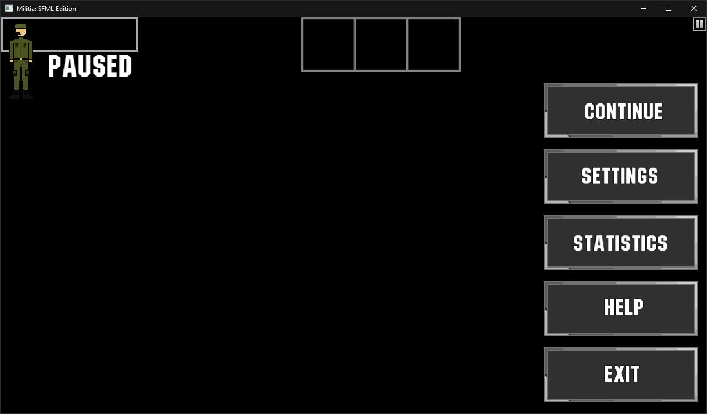

<!DOCTYPE html>
<html>
	<head>
		<title>Build Logs - v0.1.0.2 alpha</title>
		<meta name="viewport" content="width=device-width, initial-scale=1">
		<link rel="stylesheet" href="../../../css/style.css" type="text/css">
		<script src="../../../js/script.js" type="text/javascript"></script>
	</head>
	
	<body>
		<h1>Build Logs from v0.1.0.2 alpha</h1>
		<hr>
		<pre><a href="../../index.html">Home</a>	<a href="../../versionHistory/v0_1_0_2_alpha/v0_1_0_2.html">Back to Changelog</a></pre>
		<hr>
		<p>Updated as of July 20, 2022 11:48:47</p>
		<button onclick='showAllImages("imgDiv")'>Show all images</button>
		<ul>
			<h2>Build 786: phroton/feature/list-map-input-engine</h2>
				<h3>July 6, 2022 - 14:39:42</h3>
				<pre>||=== Build: default in militia2d (compiler: GNU GCC Compiler) ===|
\Militia SFML\engine\resource-engine.cpp||In member function 'void Dzergero::ResourceEngine::ListTexture()':|
\Militia SFML\engine\resource-engine.cpp|65|error: expected ';' before 'std'|
\Militia SFML\engine\resource-engine.cpp|68|error: 'itr' was not declared in this scope|
\Militia SFML\engine\resource-engine.cpp|68|note: suggested alternative: 'itoa'|
||=== Build finished: 2 error(s), 0 warning(s) (0 minute(s), 32 second(s)) ===|
</pre>
				<h3>July 6, 2022 - 14:40:58</h3>
				<pre>||=== Build: default in militia2d (compiler: GNU GCC Compiler) ===|
\Militia SFML\engine\resource-engine.cpp||In member function 'void Dzergero::ResourceEngine::ListTexture()':|
\Militia SFML\engine\resource-engine.cpp|69|error: no match for 'operator<<' (operand types are 'std::basic_ostream<code><char></code>' and 'sf::Texture')|
C:\Program Files\CodeBlocks\MinGW\lib\gcc\x86_64-w64-mingw32\8.1.0\include\c++\ostream|108|note: candidate: 'std::basic_ostream<_CharT, _Traits>::__ostream_type& std::basic_ostream<_CharT, _Traits>::operator<<(std::basic_ostream<_CharT, _Traits>::__ostream_type& (*)(std::basic_ostream<_CharT, _Traits>::__ostream_type&)) [with _CharT = char; _Traits = std::char_traits<code><char></code>; std::basic_ostream<_CharT, _Traits>::__ostream_type = std::basic_ostream<code><char></code>]'|
C:\Program Files\CodeBlocks\MinGW\lib\gcc\x86_64-w64-mingw32\8.1.0\include\c++\ostream|108|note:   no known conversion for argument 1 from 'sf::Texture' to 'std::basic_ostream<code><char></code>::__ostream_type& (*)(std::basic_ostream<code><char></code>::__ostream_type&)' {aka 'std::basic_ostream<code><char></code>& (*)(std::basic_ostream<code><char></code>&)'}|
C:\Program Files\CodeBlocks\MinGW\lib\gcc\x86_64-w64-mingw32\8.1.0\include\c++\ostream|117|note: candidate: 'std::basic_ostream<_CharT, _Traits>::__ostream_type& std::basic_ostream<_CharT, _Traits>::operator<<(std::basic_ostream<_CharT, _Traits>::__ios_type& (*)(std::basic_ostream<_CharT, _Traits>::__ios_type&)) [with _CharT = char; _Traits = std::char_traits<code><char></code>; std::basic_ostream<_CharT, _Traits>::__ostream_type = std::basic_ostream<code><char></code>; std::basic_ostream<_CharT, _Traits>::__ios_type = std::basic_ios<code><char></code>]'|
C:\Program Files\CodeBlocks\MinGW\lib\gcc\x86_64-w64-mingw32\8.1.0\include\c++\ostream|117|note:   no known conversion for argument 1 from 'sf::Texture' to 'std::basic_ostream<code><char></code>::__ios_type& (*)(std::basic_ostream<code><char></code>::__ios_type&)' {aka 'std::basic_ios<code><char></code>& (*)(std::basic_ios<code><char></code>&)'}|
C:\Program Files\CodeBlocks\MinGW\lib\gcc\x86_64-w64-mingw32\8.1.0\include\c++\ostream|127|note: candidate: 'std::basic_ostream<_CharT, _Traits>::__ostream_type& std::basic_ostream<_CharT, _Traits>::operator<<(std::ios_base& (*)(std::ios_base&)) [with _CharT = char; _Traits = std::char_traits<code><char></code>; std::basic_ostream<_CharT, _Traits>::__ostream_type = std::basic_ostream<code><char></code>]'|
C:\Program Files\CodeBlocks\MinGW\lib\gcc\x86_64-w64-mingw32\8.1.0\include\c++\ostream|127|note:   no known conversion for argument 1 from 'sf::Texture' to 'std::ios_base& (*)(std::ios_base&)'|
C:\Program Files\CodeBlocks\MinGW\lib\gcc\x86_64-w64-mingw32\8.1.0\include\c++\ostream|166|note: candidate: 'std::basic_ostream<_CharT, _Traits>::__ostream_type& std::basic_ostream<_CharT, _Traits>::operator<<(long int) [with _CharT = char; _Traits = std::char_traits<code><char></code>; std::basic_ostream<_CharT, _Traits>::__ostream_type = std::basic_ostream<code><char></code>]'|
C:\Program Files\CodeBlocks\MinGW\lib\gcc\x86_64-w64-mingw32\8.1.0\include\c++\ostream|166|note:   no known conversion for argument 1 from 'sf::Texture' to 'long int'|
C:\Program Files\CodeBlocks\MinGW\lib\gcc\x86_64-w64-mingw32\8.1.0\include\c++\ostream|170|note: candidate: 'std::basic_ostream<_CharT, _Traits>::__ostream_type& std::basic_ostream<_CharT, _Traits>::operator<<(long unsigned int) [with _CharT = char; _Traits = std::char_traits<code><char></code>; std::basic_ostream<_CharT, _Traits>::__ostream_type = std::basic_ostream<code><char></code>]'|
C:\Program Files\CodeBlocks\MinGW\lib\gcc\x86_64-w64-mingw32\8.1.0\include\c++\ostream|170|note:   no known conversion for argument 1 from 'sf::Texture' to 'long unsigned int'|
C:\Program Files\CodeBlocks\MinGW\lib\gcc\x86_64-w64-mingw32\8.1.0\include\c++\ostream|174|note: candidate: 'std::basic_ostream<_CharT, _Traits>::__ostream_type& std::basic_ostream<_CharT, _Traits>::operator<<(bool) [with _CharT = char; _Traits = std::char_traits<code><char></code>; std::basic_ostream<_CharT, _Traits>::__ostream_type = std::basic_ostream<code><char></code>]'|
C:\Program Files\CodeBlocks\MinGW\lib\gcc\x86_64-w64-mingw32\8.1.0\include\c++\ostream|174|note:   no known conversion for argument 1 from 'sf::Texture' to 'bool'|
C:\Program Files\CodeBlocks\MinGW\lib\gcc\x86_64-w64-mingw32\8.1.0\include\c++\bits\ostream.tcc|91|note: candidate: 'std::basic_ostream<_CharT, _Traits>& std::basic_ostream<_CharT, _Traits>::operator<<(short int) [with _CharT = char; _Traits = std::char_traits<code><char></code>]'|
C:\Program Files\CodeBlocks\MinGW\lib\gcc\x86_64-w64-mingw32\8.1.0\include\c++\bits\ostream.tcc|91|note:   no known conversion for argument 1 from 'sf::Texture' to 'short int'|
C:\Program Files\CodeBlocks\MinGW\lib\gcc\x86_64-w64-mingw32\8.1.0\include\c++\ostream|181|note: candidate: 'std::basic_ostream<_CharT, _Traits>::__ostream_type& std::basic_ostream<_CharT, _Traits>::operator<<(short unsigned int) [with _CharT = char; _Traits = std::char_traits<code><char></code>; std::basic_ostream<_CharT, _Traits>::__ostream_type = std::basic_ostream<code><char></code>]'|
C:\Program Files\CodeBlocks\MinGW\lib\gcc\x86_64-w64-mingw32\8.1.0\include\c++\ostream|181|note:   no known conversion for argument 1 from 'sf::Texture' to 'short unsigned int'|
C:\Program Files\CodeBlocks\MinGW\lib\gcc\x86_64-w64-mingw32\8.1.0\include\c++\bits\ostream.tcc|105|note: candidate: 'std::basic_ostream<_CharT, _Traits>& std::basic_ostream<_CharT, _Traits>::operator<<(int) [with _CharT = char; _Traits = std::char_traits<code><char></code>]'|
C:\Program Files\CodeBlocks\MinGW\lib\gcc\x86_64-w64-mingw32\8.1.0\include\c++\bits\ostream.tcc|105|note:   no known conversion for argument 1 from 'sf::Texture' to 'int'|
C:\Program Files\CodeBlocks\MinGW\lib\gcc\x86_64-w64-mingw32\8.1.0\include\c++\ostream|192|note: candidate: 'std::basic_ostream<_CharT, _Traits>::__ostream_type& std::basic_ostream<_CharT, _Traits>::operator<<(unsigned int) [with _CharT = char; _Traits = std::char_traits<code><char></code>; std::basic_ostream<_CharT, _Traits>::__ostream_type = std::basic_ostream<code><char></code>]'|
C:\Program Files\CodeBlocks\MinGW\lib\gcc\x86_64-w64-mingw32\8.1.0\include\c++\ostream|192|note:   no known conversion for argument 1 from 'sf::Texture' to 'unsigned int'|
C:\Program Files\CodeBlocks\MinGW\lib\gcc\x86_64-w64-mingw32\8.1.0\include\c++\ostream|201|note: candidate: 'std::basic_ostream<_CharT, _Traits>::__ostream_type& std::basic_ostream<_CharT, _Traits>::operator<<(long long int) [with _CharT = char; _Traits = std::char_traits<code><char></code>; std::basic_ostream<_CharT, _Traits>::__ostream_type = std::basic_ostream<code><char></code>]'|
C:\Program Files\CodeBlocks\MinGW\lib\gcc\x86_64-w64-mingw32\8.1.0\include\c++\ostream|201|note:   no known conversion for argument 1 from 'sf::Texture' to 'long long int'|
C:\Program Files\CodeBlocks\MinGW\lib\gcc\x86_64-w64-mingw32\8.1.0\include\c++\ostream|205|note: candidate: 'std::basic_ostream<_CharT, _Traits>::__ostream_type& std::basic_ostream<_CharT, _Traits>::operator<<(long long unsigned int) [with _CharT = char; _Traits = std::char_traits<code><char></code>; std::basic_ostream<_CharT, _Traits>::__ostream_type = std::basic_ostream<code><char></code>]'|
C:\Program Files\CodeBlocks\MinGW\lib\gcc\x86_64-w64-mingw32\8.1.0\include\c++\ostream|205|note:   no known conversion for argument 1 from 'sf::Texture' to 'long long unsigned int'|
C:\Program Files\CodeBlocks\MinGW\lib\gcc\x86_64-w64-mingw32\8.1.0\include\c++\ostream|220|note: candidate: 'std::basic_ostream<_CharT, _Traits>::__ostream_type& std::basic_ostream<_CharT, _Traits>::operator<<(double) [with _CharT = char; _Traits = std::char_traits<code><char></code>; std::basic_ostream<_CharT, _Traits>::__ostream_type = std::basic_ostream<code><char></code>]'|
C:\Program Files\CodeBlocks\MinGW\lib\gcc\x86_64-w64-mingw32\8.1.0\include\c++\ostream|220|note:   no known conversion for argument 1 from 'sf::Texture' to 'double'|
C:\Program Files\CodeBlocks\MinGW\lib\gcc\x86_64-w64-mingw32\8.1.0\include\c++\ostream|224|note: candidate: 'std::basic_ostream<_CharT, _Traits>::__ostream_type& std::basic_ostream<_CharT, _Traits>::operator<<(float) [with _CharT = char; _Traits = std::char_traits<code><char></code>; std::basic_ostream<_CharT, _Traits>::__ostream_type = std::basic_ostream<code><char></code>]'|
C:\Program Files\CodeBlocks\MinGW\lib\gcc\x86_64-w64-mingw32\8.1.0\include\c++\ostream|224|note:   no known conversion for argument 1 from 'sf::Texture' to 'float'|
C:\Program Files\CodeBlocks\MinGW\lib\gcc\x86_64-w64-mingw32\8.1.0\include\c++\ostream|232|note: candidate: 'std::basic_ostream<_CharT, _Traits>::__ostream_type& std::basic_ostream<_CharT, _Traits>::operator<<(long double) [with _CharT = char; _Traits = std::char_traits<code><char></code>; std::basic_ostream<_CharT, _Traits>::__ostream_type = std::basic_ostream<code><char></code>]'|
C:\Program Files\CodeBlocks\MinGW\lib\gcc\x86_64-w64-mingw32\8.1.0\include\c++\ostream|232|note:   no known conversion for argument 1 from 'sf::Texture' to 'long double'|
C:\Program Files\CodeBlocks\MinGW\lib\gcc\x86_64-w64-mingw32\8.1.0\include\c++\ostream|245|note: candidate: 'std::basic_ostream<_CharT, _Traits>::__ostream_type& std::basic_ostream<_CharT, _Traits>::operator<<(const void*) [with _CharT = char; _Traits = std::char_traits<code><char></code>; std::basic_ostream<_CharT, _Traits>::__ostream_type = std::basic_ostream<code><char></code>]'|
C:\Program Files\CodeBlocks\MinGW\lib\gcc\x86_64-w64-mingw32\8.1.0\include\c++\ostream|245|note:   no known conversion for argument 1 from 'sf::Texture' to 'const void*'|
C:\Program Files\CodeBlocks\MinGW\lib\gcc\x86_64-w64-mingw32\8.1.0\include\c++\bits\ostream.tcc|119|note: candidate: 'std::basic_ostream<_CharT, _Traits>& std::basic_ostream<_CharT, _Traits>::operator<<(std::basic_ostream<_CharT, _Traits>::__streambuf_type*) [with _CharT = char; _Traits = std::char_traits<code><char></code>; std::basic_ostream<_CharT, _Traits>::__streambuf_type = std::basic_streambuf<code><char></code>]'|
C:\Program Files\CodeBlocks\MinGW\lib\gcc\x86_64-w64-mingw32\8.1.0\include\c++\bits\ostream.tcc|119|note:   no known conversion for argument 1 from 'sf::Texture' to 'std::basic_ostream<code><char></code>::__streambuf_type*' {aka 'std::basic_streambuf<code><char></code>*'}|
C:\Program Files\CodeBlocks\MinGW\lib\gcc\x86_64-w64-mingw32\8.1.0\include\c++\string_view|545|note: candidate: 'template<class _CharT, class _Traits> std::basic_ostream<_CharT, _Traits>& std::operator<<(std::basic_ostream<_CharT, _Traits>&, std::basic_string_view<_CharT, _Traits>)'|
C:\Program Files\CodeBlocks\MinGW\lib\gcc\x86_64-w64-mingw32\8.1.0\include\c++\string_view|545|note:   template argument deduction/substitution failed:|
\Militia SFML\engine\resource-engine.cpp|69|note:   'sf::Texture' is not derived from 'std::basic_string_view<_CharT, _Traits>'|
C:\Program Files\CodeBlocks\MinGW\lib\gcc\x86_64-w64-mingw32\8.1.0\include\c++\bits\basic_string.h|6284|note: candidate: 'template<class _CharT, class _Traits, class _Alloc> std::basic_ostream<_CharT, _Traits>& std::operator<<(std::basic_ostream<_CharT, _Traits>&, const std::__cxx11::basic_string<_CharT, _Traits, _Alloc>&)'|
C:\Program Files\CodeBlocks\MinGW\lib\gcc\x86_64-w64-mingw32\8.1.0\include\c++\bits\basic_string.h|6284|note:   template argument deduction/substitution failed:|
\Militia SFML\engine\resource-engine.cpp|69|note:   'sf::Texture' is not derived from 'const std::__cxx11::basic_string<_CharT, _Traits, _Alloc>'|
C:\Program Files\CodeBlocks\MinGW\lib\gcc\x86_64-w64-mingw32\8.1.0\include\c++\system_error|217|note: candidate: 'template<class _CharT, class _Traits> std::basic_ostream<_CharT, _Traits>& std::operator<<(std::basic_ostream<_CharT, _Traits>&, const std::error_code&)'|
C:\Program Files\CodeBlocks\MinGW\lib\gcc\x86_64-w64-mingw32\8.1.0\include\c++\system_error|217|note:   template argument deduction/substitution failed:|
\Militia SFML\engine\resource-engine.cpp|69|note:   cannot convert 'itr.std::_Rb_tree_iterator<std::pair<const std::__cxx11::basic_string<code><char></code>, sf::Texture> >::operator->()->std::pair<const std::__cxx11::basic_string<code><char></code>, sf::Texture>::second' (type 'sf::Texture') to type 'const std::error_code&'|
C:\Program Files\CodeBlocks\MinGW\lib\gcc\x86_64-w64-mingw32\8.1.0\include\c++\ostream|497|note: candidate: 'template<class _CharT, class _Traits> std::basic_ostream<_CharT, _Traits>& std::operator<<(std::basic_ostream<_CharT, _Traits>&, _CharT)'|
C:\Program Files\CodeBlocks\MinGW\lib\gcc\x86_64-w64-mingw32\8.1.0\include\c++\ostream|497|note:   template argument deduction/substitution failed:|
\Militia SFML\engine\resource-engine.cpp|69|note:   deduced conflicting types for parameter '_CharT' ('char' and 'sf::Texture')|
C:\Program Files\CodeBlocks\MinGW\lib\gcc\x86_64-w64-mingw32\8.1.0\include\c++\ostream|502|note: candidate: 'template<class _CharT, class _Traits> std::basic_ostream<_CharT, _Traits>& std::operator<<(std::basic_ostream<_CharT, _Traits>&, char)'|
C:\Program Files\CodeBlocks\MinGW\lib\gcc\x86_64-w64-mingw32\8.1.0\include\c++\ostream|502|note:   template argument deduction/substitution failed:|
\Militia SFML\engine\resource-engine.cpp|69|note:   cannot convert 'itr.std::_Rb_tree_iterator<std::pair<const std::__cxx11::basic_string<code><char></code>, sf::Texture> >::operator->()->std::pair<const std::__cxx11::basic_string<code><char></code>, sf::Texture>::second' (type 'sf::Texture') to type 'char'|
C:\Program Files\CodeBlocks\MinGW\lib\gcc\x86_64-w64-mingw32\8.1.0\include\c++\ostream|508|note: candidate: 'template<class _Traits> std::basic_ostream<char, _Traits>& std::operator<<(std::basic_ostream<char, _Traits>&, char)'|
C:\Program Files\CodeBlocks\MinGW\lib\gcc\x86_64-w64-mingw32\8.1.0\include\c++\ostream|508|note:   template argument deduction/substitution failed:|
\Militia SFML\engine\resource-engine.cpp|69|note:   cannot convert 'itr.std::_Rb_tree_iterator<std::pair<const std::__cxx11::basic_string<code><char></code>, sf::Texture> >::operator->()->std::pair<const std::__cxx11::basic_string<code><char></code>, sf::Texture>::second' (type 'sf::Texture') to type 'char'|
C:\Program Files\CodeBlocks\MinGW\lib\gcc\x86_64-w64-mingw32\8.1.0\include\c++\ostream|514|note: candidate: 'template<class _Traits> std::basic_ostream<char, _Traits>& std::operator<<(std::basic_ostream<char, _Traits>&, signed char)'|
C:\Program Files\CodeBlocks\MinGW\lib\gcc\x86_64-w64-mingw32\8.1.0\include\c++\ostream|514|note:   template argument deduction/substitution failed:|
\Militia SFML\engine\resource-engine.cpp|69|note:   cannot convert 'itr.std::_Rb_tree_iterator<std::pair<const std::__cxx11::basic_string<code><char></code>, sf::Texture> >::operator->()->std::pair<const std::__cxx11::basic_string<code><char></code>, sf::Texture>::second' (type 'sf::Texture') to type 'signed char'|
C:\Program Files\CodeBlocks\MinGW\lib\gcc\x86_64-w64-mingw32\8.1.0\include\c++\ostream|519|note: candidate: 'template<class _Traits> std::basic_ostream<char, _Traits>& std::operator<<(std::basic_ostream<char, _Traits>&, unsigned char)'|
C:\Program Files\CodeBlocks\MinGW\lib\gcc\x86_64-w64-mingw32\8.1.0\include\c++\ostream|519|note:   template argument deduction/substitution failed:|
\Militia SFML\engine\resource-engine.cpp|69|note:   cannot convert 'itr.std::_Rb_tree_iterator<std::pair<const std::__cxx11::basic_string<code><char></code>, sf::Texture> >::operator->()->std::pair<const std::__cxx11::basic_string<code><char></code>, sf::Texture>::second' (type 'sf::Texture') to type 'unsigned char'|
C:\Program Files\CodeBlocks\MinGW\lib\gcc\x86_64-w64-mingw32\8.1.0\include\c++\ostream|539|note: candidate: 'template<class _CharT, class _Traits> std::basic_ostream<_CharT, _Traits>& std::operator<<(std::basic_ostream<_CharT, _Traits>&, const _CharT*)'|
C:\Program Files\CodeBlocks\MinGW\lib\gcc\x86_64-w64-mingw32\8.1.0\include\c++\ostream|539|note:   template argument deduction/substitution failed:|
\Militia SFML\engine\resource-engine.cpp|69|note:   mismatched types 'const _CharT*' and 'sf::Texture'|
C:\Program Files\CodeBlocks\MinGW\lib\gcc\x86_64-w64-mingw32\8.1.0\include\c++\bits\ostream.tcc|321|note: candidate: 'template<class _CharT, class _Traits> std::basic_ostream<_CharT, _Traits>& std::operator<<(std::basic_ostream<_CharT, _Traits>&, const char*)'|
C:\Program Files\CodeBlocks\MinGW\lib\gcc\x86_64-w64-mingw32\8.1.0\include\c++\bits\ostream.tcc|321|note:   template argument deduction/substitution failed:|
\Militia SFML\engine\resource-engine.cpp|69|note:   cannot convert 'itr.std::_Rb_tree_iterator<std::pair<const std::__cxx11::basic_string<code><char></code>, sf::Texture> >::operator->()->std::pair<const std::__cxx11::basic_string<code><char></code>, sf::Texture>::second' (type 'sf::Texture') to type 'const char*'|
C:\Program Files\CodeBlocks\MinGW\lib\gcc\x86_64-w64-mingw32\8.1.0\include\c++\ostream|556|note: candidate: 'template<class _Traits> std::basic_ostream<char, _Traits>& std::operator<<(std::basic_ostream<char, _Traits>&, const char*)'|
C:\Program Files\CodeBlocks\MinGW\lib\gcc\x86_64-w64-mingw32\8.1.0\include\c++\ostream|556|note:   template argument deduction/substitution failed:|
\Militia SFML\engine\resource-engine.cpp|69|note:   cannot convert 'itr.std::_Rb_tree_iterator<std::pair<const std::__cxx11::basic_string<code><char></code>, sf::Texture> >::operator->()->std::pair<const std::__cxx11::basic_string<code><char></code>, sf::Texture>::second' (type 'sf::Texture') to type 'const char*'|
C:\Program Files\CodeBlocks\MinGW\lib\gcc\x86_64-w64-mingw32\8.1.0\include\c++\ostream|569|note: candidate: 'template<class _Traits> std::basic_ostream<char, _Traits>& std::operator<<(std::basic_ostream<char, _Traits>&, const signed char*)'|
C:\Program Files\CodeBlocks\MinGW\lib\gcc\x86_64-w64-mingw32\8.1.0\include\c++\ostream|569|note:   template argument deduction/substitution failed:|
\Militia SFML\engine\resource-engine.cpp|69|note:   cannot convert 'itr.std::_Rb_tree_iterator<std::pair<const std::__cxx11::basic_string<code><char></code>, sf::Texture> >::operator->()->std::pair<const std::__cxx11::basic_string<code><char></code>, sf::Texture>::second' (type 'sf::Texture') to type 'const signed char*'|
C:\Program Files\CodeBlocks\MinGW\lib\gcc\x86_64-w64-mingw32\8.1.0\include\c++\ostream|574|note: candidate: 'template<class _Traits> std::basic_ostream<char, _Traits>& std::operator<<(std::basic_ostream<char, _Traits>&, const unsigned char*)'|
C:\Program Files\CodeBlocks\MinGW\lib\gcc\x86_64-w64-mingw32\8.1.0\include\c++\ostream|574|note:   template argument deduction/substitution failed:|
\Militia SFML\engine\resource-engine.cpp|69|note:   cannot convert 'itr.std::_Rb_tree_iterator<std::pair<const std::__cxx11::basic_string<code><char></code>, sf::Texture> >::operator->()->std::pair<const std::__cxx11::basic_string<code><char></code>, sf::Texture>::second' (type 'sf::Texture') to type 'const unsigned char*'|
C:\Program Files\CodeBlocks\MinGW\lib\gcc\x86_64-w64-mingw32\8.1.0\include\c++\ostream|682|note: candidate: 'template<class _Ostream, class _Tp> typename std::enable_if<std::__and_<std::__not_<std::is_lvalue_reference<_Tp> >, std::__is_convertible_to_basic_ostream<_Ostream>, std::__is_insertable<typename std::__is_convertible_to_basic_ostream<_Tp>::__ostream_type, const _Tp&, void> >::value, typename std::__is_convertible_to_basic_ostream<_Tp>::__ostream_type>::type std::operator<<(_Ostream&&, const _Tp&)'|
C:\Program Files\CodeBlocks\MinGW\lib\gcc\x86_64-w64-mingw32\8.1.0\include\c++\ostream|682|note:   template argument deduction/substitution failed:|
\Militia SFML\engine\resource-engine.cpp|69|required from here|
C:\Program Files\CodeBlocks\MinGW\lib\gcc\x86_64-w64-mingw32\8.1.0\include\c++\ostream|682|error: no type named 'type' in 'struct std::enable_if<false, std::basic_ostream<code><char></code>&>'|
||=== Build finished: 2 error(s), 1 warning(s) (0 minute(s), 18 second(s)) ===|
</pre>
				<h3>July 6, 2022 - 14:46:19</h3>
				<li>Same error as above.</li>
				<h3>July 6, 2022 - 14:52:18</h3>
				<pre>||=== Build: default in militia2d (compiler: GNU GCC Compiler) ===|
\Militia SFML\engine\resource-engine.h|25|error: declaration of 'operator<<' as non-function|
\Militia SFML\engine\resource-engine.h|25|error: expected ';' at end of member declaration|
\Militia SFML\engine\resource-engine.h|25|error: expected ')' before '&' token|
\Militia SFML\engine\resource-engine.h|25|error: declaration of 'operator<<' as non-function|
\Militia SFML\engine\resource-engine.h|25|error: expected ';' at end of member declaration|
\Militia SFML\engine\resource-engine.h|25|error: expected ')' before '&' token|
\Militia SFML\engine\resource-engine.h|25|error: declaration of 'operator<<' as non-function|
\Militia SFML\engine\resource-engine.h|25|error: expected ';' at end of member declaration|
\Militia SFML\engine\resource-engine.h|25|error: expected ')' before '&' token|
\Militia SFML\engine\resource-engine.h|25|error: declaration of 'operator<<' as non-function|
\Militia SFML\engine\resource-engine.h|25|error: expected ';' at end of member declaration|
\Militia SFML\engine\resource-engine.h|25|error: expected ')' before '&' token|
||=== Build failed: 12 error(s), 0 warning(s) (0 minute(s), 18 second(s)) ===|
</pre>
				<h3>July 6, 2022 - 14:55:34</h3>
				<pre>||=== Build: default in militia2d (compiler: GNU GCC Compiler) ===|
C\Militia SFML\engine\resource-engine.cpp||In member function 'void Dzergero::ResourceEngine::ListTexture()':|
C\Militia SFML\engine\resource-engine.cpp|70|error: no match for 'operator<<' (operand types are 'std::basic_ostream<code><char></code>' and 'sf::Texture')|
C:\Program Files\CodeBlocks\MinGW\lib\gcc\x86_64-w64-mingw32\8.1.0\include\c++\ostream|108|note: candidate: 'std::basic_ostream<_CharT, _Traits>::__ostream_type& std::basic_ostream<_CharT, _Traits>::operator<<(std::basic_ostream<_CharT, _Traits>::__ostream_type& (*)(std::basic_ostream<_CharT, _Traits>::__ostream_type&)) [with _CharT = char; _Traits = std::char_traits<code><char></code>; std::basic_ostream<_CharT, _Traits>::__ostream_type = std::basic_ostream<code><char></code>]'|
C:\Program Files\CodeBlocks\MinGW\lib\gcc\x86_64-w64-mingw32\8.1.0\include\c++\ostream|108|note:   no known conversion for argument 1 from 'sf::Texture' to 'std::basic_ostream<code><char></code>::__ostream_type& (*)(std::basic_ostream<code><char></code>::__ostream_type&)' {aka 'std::basic_ostream<code><char></code>& (*)(std::basic_ostream<code><char></code>&)'}|
C:\Program Files\CodeBlocks\MinGW\lib\gcc\x86_64-w64-mingw32\8.1.0\include\c++\ostream|117|note: candidate: 'std::basic_ostream<_CharT, _Traits>::__ostream_type& std::basic_ostream<_CharT, _Traits>::operator<<(std::basic_ostream<_CharT, _Traits>::__ios_type& (*)(std::basic_ostream<_CharT, _Traits>::__ios_type&)) [with _CharT = char; _Traits = std::char_traits<code><char></code>; std::basic_ostream<_CharT, _Traits>::__ostream_type = std::basic_ostream<code><char></code>; std::basic_ostream<_CharT, _Traits>::__ios_type = std::basic_ios<code><char></code>]'|
C:\Program Files\CodeBlocks\MinGW\lib\gcc\x86_64-w64-mingw32\8.1.0\include\c++\ostream|117|note:   no known conversion for argument 1 from 'sf::Texture' to 'std::basic_ostream<code><char></code>::__ios_type& (*)(std::basic_ostream<code><char></code>::__ios_type&)' {aka 'std::basic_ios<code><char></code>& (*)(std::basic_ios<code><char></code>&)'}|
C:\Program Files\CodeBlocks\MinGW\lib\gcc\x86_64-w64-mingw32\8.1.0\include\c++\ostream|127|note: candidate: 'std::basic_ostream<_CharT, _Traits>::__ostream_type& std::basic_ostream<_CharT, _Traits>::operator<<(std::ios_base& (*)(std::ios_base&)) [with _CharT = char; _Traits = std::char_traits<code><char></code>; std::basic_ostream<_CharT, _Traits>::__ostream_type = std::basic_ostream<code><char></code>]'|
C:\Program Files\CodeBlocks\MinGW\lib\gcc\x86_64-w64-mingw32\8.1.0\include\c++\ostream|127|note:   no known conversion for argument 1 from 'sf::Texture' to 'std::ios_base& (*)(std::ios_base&)'|
C:\Program Files\CodeBlocks\MinGW\lib\gcc\x86_64-w64-mingw32\8.1.0\include\c++\ostream|166|note: candidate: 'std::basic_ostream<_CharT, _Traits>::__ostream_type& std::basic_ostream<_CharT, _Traits>::operator<<(long int) [with _CharT = char; _Traits = std::char_traits<code><char></code>; std::basic_ostream<_CharT, _Traits>::__ostream_type = std::basic_ostream<code><char></code>]'|
C:\Program Files\CodeBlocks\MinGW\lib\gcc\x86_64-w64-mingw32\8.1.0\include\c++\ostream|166|note:   no known conversion for argument 1 from 'sf::Texture' to 'long int'|
C:\Program Files\CodeBlocks\MinGW\lib\gcc\x86_64-w64-mingw32\8.1.0\include\c++\ostream|170|note: candidate: 'std::basic_ostream<_CharT, _Traits>::__ostream_type& std::basic_ostream<_CharT, _Traits>::operator<<(long unsigned int) [with _CharT = char; _Traits = std::char_traits<code><char></code>; std::basic_ostream<_CharT, _Traits>::__ostream_type = std::basic_ostream<code><char></code>]'|
C:\Program Files\CodeBlocks\MinGW\lib\gcc\x86_64-w64-mingw32\8.1.0\include\c++\ostream|170|note:   no known conversion for argument 1 from 'sf::Texture' to 'long unsigned int'|
C:\Program Files\CodeBlocks\MinGW\lib\gcc\x86_64-w64-mingw32\8.1.0\include\c++\ostream|174|note: candidate: 'std::basic_ostream<_CharT, _Traits>::__ostream_type& std::basic_ostream<_CharT, _Traits>::operator<<(bool) [with _CharT = char; _Traits = std::char_traits<code><char></code>; std::basic_ostream<_CharT, _Traits>::__ostream_type = std::basic_ostream<code><char></code>]'|
C:\Program Files\CodeBlocks\MinGW\lib\gcc\x86_64-w64-mingw32\8.1.0\include\c++\ostream|174|note:   no known conversion for argument 1 from 'sf::Texture' to 'bool'|
C:\Program Files\CodeBlocks\MinGW\lib\gcc\x86_64-w64-mingw32\8.1.0\include\c++\bits\ostream.tcc|91|note: candidate: 'std::basic_ostream<_CharT, _Traits>& std::basic_ostream<_CharT, _Traits>::operator<<(short int) [with _CharT = char; _Traits = std::char_traits<code><char></code>]'|
C:\Program Files\CodeBlocks\MinGW\lib\gcc\x86_64-w64-mingw32\8.1.0\include\c++\bits\ostream.tcc|91|note:   no known conversion for argument 1 from 'sf::Texture' to 'short int'|
C:\Program Files\CodeBlocks\MinGW\lib\gcc\x86_64-w64-mingw32\8.1.0\include\c++\ostream|181|note: candidate: 'std::basic_ostream<_CharT, _Traits>::__ostream_type& std::basic_ostream<_CharT, _Traits>::operator<<(short unsigned int) [with _CharT = char; _Traits = std::char_traits<code><char></code>; std::basic_ostream<_CharT, _Traits>::__ostream_type = std::basic_ostream<code><char></code>]'|
C:\Program Files\CodeBlocks\MinGW\lib\gcc\x86_64-w64-mingw32\8.1.0\include\c++\ostream|181|note:   no known conversion for argument 1 from 'sf::Texture' to 'short unsigned int'|
C:\Program Files\CodeBlocks\MinGW\lib\gcc\x86_64-w64-mingw32\8.1.0\include\c++\bits\ostream.tcc|105|note: candidate: 'std::basic_ostream<_CharT, _Traits>& std::basic_ostream<_CharT, _Traits>::operator<<(int) [with _CharT = char; _Traits = std::char_traits<code><char></code>]'|
C:\Program Files\CodeBlocks\MinGW\lib\gcc\x86_64-w64-mingw32\8.1.0\include\c++\bits\ostream.tcc|105|note:   no known conversion for argument 1 from 'sf::Texture' to 'int'|
C:\Program Files\CodeBlocks\MinGW\lib\gcc\x86_64-w64-mingw32\8.1.0\include\c++\ostream|192|note: candidate: 'std::basic_ostream<_CharT, _Traits>::__ostream_type& std::basic_ostream<_CharT, _Traits>::operator<<(unsigned int) [with _CharT = char; _Traits = std::char_traits<code><char></code>; std::basic_ostream<_CharT, _Traits>::__ostream_type = std::basic_ostream<code><char></code>]'|
C:\Program Files\CodeBlocks\MinGW\lib\gcc\x86_64-w64-mingw32\8.1.0\include\c++\ostream|192|note:   no known conversion for argument 1 from 'sf::Texture' to 'unsigned int'|
C:\Program Files\CodeBlocks\MinGW\lib\gcc\x86_64-w64-mingw32\8.1.0\include\c++\ostream|201|note: candidate: 'std::basic_ostream<_CharT, _Traits>::__ostream_type& std::basic_ostream<_CharT, _Traits>::operator<<(long long int) [with _CharT = char; _Traits = std::char_traits<code><char></code>; std::basic_ostream<_CharT, _Traits>::__ostream_type = std::basic_ostream<code><char></code>]'|
C:\Program Files\CodeBlocks\MinGW\lib\gcc\x86_64-w64-mingw32\8.1.0\include\c++\ostream|201|note:   no known conversion for argument 1 from 'sf::Texture' to 'long long int'|
C:\Program Files\CodeBlocks\MinGW\lib\gcc\x86_64-w64-mingw32\8.1.0\include\c++\ostream|205|note: candidate: 'std::basic_ostream<_CharT, _Traits>::__ostream_type& std::basic_ostream<_CharT, _Traits>::operator<<(long long unsigned int) [with _CharT = char; _Traits = std::char_traits<code><char></code>; std::basic_ostream<_CharT, _Traits>::__ostream_type = std::basic_ostream<code><char></code>]'|
C:\Program Files\CodeBlocks\MinGW\lib\gcc\x86_64-w64-mingw32\8.1.0\include\c++\ostream|205|note:   no known conversion for argument 1 from 'sf::Texture' to 'long long unsigned int'|
C:\Program Files\CodeBlocks\MinGW\lib\gcc\x86_64-w64-mingw32\8.1.0\include\c++\ostream|220|note: candidate: 'std::basic_ostream<_CharT, _Traits>::__ostream_type& std::basic_ostream<_CharT, _Traits>::operator<<(double) [with _CharT = char; _Traits = std::char_traits<code><char></code>; std::basic_ostream<_CharT, _Traits>::__ostream_type = std::basic_ostream<code><char></code>]'|
C:\Program Files\CodeBlocks\MinGW\lib\gcc\x86_64-w64-mingw32\8.1.0\include\c++\ostream|220|note:   no known conversion for argument 1 from 'sf::Texture' to 'double'|
C:\Program Files\CodeBlocks\MinGW\lib\gcc\x86_64-w64-mingw32\8.1.0\include\c++\ostream|224|note: candidate: 'std::basic_ostream<_CharT, _Traits>::__ostream_type& std::basic_ostream<_CharT, _Traits>::operator<<(float) [with _CharT = char; _Traits = std::char_traits<code><char></code>; std::basic_ostream<_CharT, _Traits>::__ostream_type = std::basic_ostream<code><char></code>]'|
C:\Program Files\CodeBlocks\MinGW\lib\gcc\x86_64-w64-mingw32\8.1.0\include\c++\ostream|224|note:   no known conversion for argument 1 from 'sf::Texture' to 'float'|
C:\Program Files\CodeBlocks\MinGW\lib\gcc\x86_64-w64-mingw32\8.1.0\include\c++\ostream|232|note: candidate: 'std::basic_ostream<_CharT, _Traits>::__ostream_type& std::basic_ostream<_CharT, _Traits>::operator<<(long double) [with _CharT = char; _Traits = std::char_traits<code><char></code>; std::basic_ostream<_CharT, _Traits>::__ostream_type = std::basic_ostream<code><char></code>]'|
C:\Program Files\CodeBlocks\MinGW\lib\gcc\x86_64-w64-mingw32\8.1.0\include\c++\ostream|232|note:   no known conversion for argument 1 from 'sf::Texture' to 'long double'|
C:\Program Files\CodeBlocks\MinGW\lib\gcc\x86_64-w64-mingw32\8.1.0\include\c++\ostream|245|note: candidate: 'std::basic_ostream<_CharT, _Traits>::__ostream_type& std::basic_ostream<_CharT, _Traits>::operator<<(const void*) [with _CharT = char; _Traits = std::char_traits<code><char></code>; std::basic_ostream<_CharT, _Traits>::__ostream_type = std::basic_ostream<code><char></code>]'|
C:\Program Files\CodeBlocks\MinGW\lib\gcc\x86_64-w64-mingw32\8.1.0\include\c++\ostream|245|note:   no known conversion for argument 1 from 'sf::Texture' to 'const void*'|
C:\Program Files\CodeBlocks\MinGW\lib\gcc\x86_64-w64-mingw32\8.1.0\include\c++\bits\ostream.tcc|119|note: candidate: 'std::basic_ostream<_CharT, _Traits>& std::basic_ostream<_CharT, _Traits>::operator<<(std::basic_ostream<_CharT, _Traits>::__streambuf_type*) [with _CharT = char; _Traits = std::char_traits<code><char></code>; std::basic_ostream<_CharT, _Traits>::__streambuf_type = std::basic_streambuf<code><char></code>]'|
C:\Program Files\CodeBlocks\MinGW\lib\gcc\x86_64-w64-mingw32\8.1.0\include\c++\bits\ostream.tcc|119|note:   no known conversion for argument 1 from 'sf::Texture' to 'std::basic_ostream<code><char></code>::__streambuf_type*' {aka 'std::basic_streambuf<code><char></code>*'}|
C:\Program Files\CodeBlocks\MinGW\lib\gcc\x86_64-w64-mingw32\8.1.0\include\c++\string_view|545|note: candidate: 'template<class _CharT, class _Traits> std::basic_ostream<_CharT, _Traits>& std::operator<<(std::basic_ostream<_CharT, _Traits>&, std::basic_string_view<_CharT, _Traits>)'|
C:\Program Files\CodeBlocks\MinGW\lib\gcc\x86_64-w64-mingw32\8.1.0\include\c++\string_view|545|note:   template argument deduction/substitution failed:|
C\Militia SFML\engine\resource-engine.cpp|70|note:   'sf::Texture' is not derived from 'std::basic_string_view<_CharT, _Traits>'|
C:\Program Files\CodeBlocks\MinGW\lib\gcc\x86_64-w64-mingw32\8.1.0\include\c++\bits\basic_string.h|6284|note: candidate: 'template<class _CharT, class _Traits, class _Alloc> std::basic_ostream<_CharT, _Traits>& std::operator<<(std::basic_ostream<_CharT, _Traits>&, const std::__cxx11::basic_string<_CharT, _Traits, _Alloc>&)'|
C:\Program Files\CodeBlocks\MinGW\lib\gcc\x86_64-w64-mingw32\8.1.0\include\c++\bits\basic_string.h|6284|note:   template argument deduction/substitution failed:|
C\Militia SFML\engine\resource-engine.cpp|70|note:   'sf::Texture' is not derived from 'const std::__cxx11::basic_string<_CharT, _Traits, _Alloc>'|
C:\Program Files\CodeBlocks\MinGW\lib\gcc\x86_64-w64-mingw32\8.1.0\include\c++\system_error|217|note: candidate: 'template<class _CharT, class _Traits> std::basic_ostream<_CharT, _Traits>& std::operator<<(std::basic_ostream<_CharT, _Traits>&, const std::error_code&)'|
C:\Program Files\CodeBlocks\MinGW\lib\gcc\x86_64-w64-mingw32\8.1.0\include\c++\system_error|217|note:   template argument deduction/substitution failed:|
C\Militia SFML\engine\resource-engine.cpp|70|note:   cannot convert 'itr.std::_Rb_tree_iterator<std::pair<const std::__cxx11::basic_string<code><char></code>, sf::Texture> >::operator->()->std::pair<const std::__cxx11::basic_string<code><char></code>, sf::Texture>::second' (type 'sf::Texture') to type 'const std::error_code&'|
C:\Program Files\CodeBlocks\MinGW\lib\gcc\x86_64-w64-mingw32\8.1.0\include\c++\ostream|497|note: candidate: 'template<class _CharT, class _Traits> std::basic_ostream<_CharT, _Traits>& std::operator<<(std::basic_ostream<_CharT, _Traits>&, _CharT)'|
C:\Program Files\CodeBlocks\MinGW\lib\gcc\x86_64-w64-mingw32\8.1.0\include\c++\ostream|497|note:   template argument deduction/substitution failed:|
C\Militia SFML\engine\resource-engine.cpp|70|note:   deduced conflicting types for parameter '_CharT' ('char' and 'sf::Texture')|
C:\Program Files\CodeBlocks\MinGW\lib\gcc\x86_64-w64-mingw32\8.1.0\include\c++\ostream|502|note: candidate: 'template<class _CharT, class _Traits> std::basic_ostream<_CharT, _Traits>& std::operator<<(std::basic_ostream<_CharT, _Traits>&, char)'|
C:\Program Files\CodeBlocks\MinGW\lib\gcc\x86_64-w64-mingw32\8.1.0\include\c++\ostream|502|note:   template argument deduction/substitution failed:|
C\Militia SFML\engine\resource-engine.cpp|70|note:   cannot convert 'itr.std::_Rb_tree_iterator<std::pair<const std::__cxx11::basic_string<code><char></code>, sf::Texture> >::operator->()->std::pair<const std::__cxx11::basic_string<code><char></code>, sf::Texture>::second' (type 'sf::Texture') to type 'char'|
C:\Program Files\CodeBlocks\MinGW\lib\gcc\x86_64-w64-mingw32\8.1.0\include\c++\ostream|508|note: candidate: 'template<class _Traits> std::basic_ostream<char, _Traits>& std::operator<<(std::basic_ostream<char, _Traits>&, char)'|
C:\Program Files\CodeBlocks\MinGW\lib\gcc\x86_64-w64-mingw32\8.1.0\include\c++\ostream|508|note:   template argument deduction/substitution failed:|
C\Militia SFML\engine\resource-engine.cpp|70|note:   cannot convert 'itr.std::_Rb_tree_iterator<std::pair<const std::__cxx11::basic_string<code><char></code>, sf::Texture> >::operator->()->std::pair<const std::__cxx11::basic_string<code><char></code>, sf::Texture>::second' (type 'sf::Texture') to type 'char'|
C:\Program Files\CodeBlocks\MinGW\lib\gcc\x86_64-w64-mingw32\8.1.0\include\c++\ostream|514|note: candidate: 'template<class _Traits> std::basic_ostream<char, _Traits>& std::operator<<(std::basic_ostream<char, _Traits>&, signed char)'|
C:\Program Files\CodeBlocks\MinGW\lib\gcc\x86_64-w64-mingw32\8.1.0\include\c++\ostream|514|note:   template argument deduction/substitution failed:|
C\Militia SFML\engine\resource-engine.cpp|70|note:   cannot convert 'itr.std::_Rb_tree_iterator<std::pair<const std::__cxx11::basic_string<code><char></code>, sf::Texture> >::operator->()->std::pair<const std::__cxx11::basic_string<code><char></code>, sf::Texture>::second' (type 'sf::Texture') to type 'signed char'|
C:\Program Files\CodeBlocks\MinGW\lib\gcc\x86_64-w64-mingw32\8.1.0\include\c++\ostream|519|note: candidate: 'template<class _Traits> std::basic_ostream<char, _Traits>& std::operator<<(std::basic_ostream<char, _Traits>&, unsigned char)'|
C:\Program Files\CodeBlocks\MinGW\lib\gcc\x86_64-w64-mingw32\8.1.0\include\c++\ostream|519|note:   template argument deduction/substitution failed:|
C\Militia SFML\engine\resource-engine.cpp|70|note:   cannot convert 'itr.std::_Rb_tree_iterator<std::pair<const std::__cxx11::basic_string<code><char></code>, sf::Texture> >::operator->()->std::pair<const std::__cxx11::basic_string<code><char></code>, sf::Texture>::second' (type 'sf::Texture') to type 'unsigned char'|
C:\Program Files\CodeBlocks\MinGW\lib\gcc\x86_64-w64-mingw32\8.1.0\include\c++\ostream|539|note: candidate: 'template<class _CharT, class _Traits> std::basic_ostream<_CharT, _Traits>& std::operator<<(std::basic_ostream<_CharT, _Traits>&, const _CharT*)'|
C:\Program Files\CodeBlocks\MinGW\lib\gcc\x86_64-w64-mingw32\8.1.0\include\c++\ostream|539|note:   template argument deduction/substitution failed:|
C\Militia SFML\engine\resource-engine.cpp|70|note:   mismatched types 'const _CharT*' and 'sf::Texture'|
C:\Program Files\CodeBlocks\MinGW\lib\gcc\x86_64-w64-mingw32\8.1.0\include\c++\bits\ostream.tcc|321|note: candidate: 'template<class _CharT, class _Traits> std::basic_ostream<_CharT, _Traits>& std::operator<<(std::basic_ostream<_CharT, _Traits>&, const char*)'|
C:\Program Files\CodeBlocks\MinGW\lib\gcc\x86_64-w64-mingw32\8.1.0\include\c++\bits\ostream.tcc|321|note:   template argument deduction/substitution failed:|
C\Militia SFML\engine\resource-engine.cpp|70|note:   cannot convert 'itr.std::_Rb_tree_iterator<std::pair<const std::__cxx11::basic_string<code><char></code>, sf::Texture> >::operator->()->std::pair<const std::__cxx11::basic_string<code><char></code>, sf::Texture>::second' (type 'sf::Texture') to type 'const char*'|
C:\Program Files\CodeBlocks\MinGW\lib\gcc\x86_64-w64-mingw32\8.1.0\include\c++\ostream|556|note: candidate: 'template<class _Traits> std::basic_ostream<char, _Traits>& std::operator<<(std::basic_ostream<char, _Traits>&, const char*)'|
C:\Program Files\CodeBlocks\MinGW\lib\gcc\x86_64-w64-mingw32\8.1.0\include\c++\ostream|556|note:   template argument deduction/substitution failed:|
C\Militia SFML\engine\resource-engine.cpp|70|note:   cannot convert 'itr.std::_Rb_tree_iterator<std::pair<const std::__cxx11::basic_string<code><char></code>, sf::Texture> >::operator->()->std::pair<const std::__cxx11::basic_string<code><char></code>, sf::Texture>::second' (type 'sf::Texture') to type 'const char*'|
C:\Program Files\CodeBlocks\MinGW\lib\gcc\x86_64-w64-mingw32\8.1.0\include\c++\ostream|569|note: candidate: 'template<class _Traits> std::basic_ostream<char, _Traits>& std::operator<<(std::basic_ostream<char, _Traits>&, const signed char*)'|
C:\Program Files\CodeBlocks\MinGW\lib\gcc\x86_64-w64-mingw32\8.1.0\include\c++\ostream|569|note:   template argument deduction/substitution failed:|
C\Militia SFML\engine\resource-engine.cpp|70|note:   cannot convert 'itr.std::_Rb_tree_iterator<std::pair<const std::__cxx11::basic_string<code><char></code>, sf::Texture> >::operator->()->std::pair<const std::__cxx11::basic_string<code><char></code>, sf::Texture>::second' (type 'sf::Texture') to type 'const signed char*'|
C:\Program Files\CodeBlocks\MinGW\lib\gcc\x86_64-w64-mingw32\8.1.0\include\c++\ostream|574|note: candidate: 'template<class _Traits> std::basic_ostream<char, _Traits>& std::operator<<(std::basic_ostream<char, _Traits>&, const unsigned char*)'|
C:\Program Files\CodeBlocks\MinGW\lib\gcc\x86_64-w64-mingw32\8.1.0\include\c++\ostream|574|note:   template argument deduction/substitution failed:|
C\Militia SFML\engine\resource-engine.cpp|70|note:   cannot convert 'itr.std::_Rb_tree_iterator<std::pair<const std::__cxx11::basic_string<code><char></code>, sf::Texture> >::operator->()->std::pair<const std::__cxx11::basic_string<code><char></code>, sf::Texture>::second' (type 'sf::Texture') to type 'const unsigned char*'|
C:\Program Files\CodeBlocks\MinGW\lib\gcc\x86_64-w64-mingw32\8.1.0\include\c++\ostream|682|note: candidate: 'template<class _Ostream, class _Tp> typename std::enable_if<std::__and_<std::__not_<std::is_lvalue_reference<_Tp> >, std::__is_convertible_to_basic_ostream<_Ostream>, std::__is_insertable<typename std::__is_convertible_to_basic_ostream<_Tp>::__ostream_type, const _Tp&, void> >::value, typename std::__is_convertible_to_basic_ostream<_Tp>::__ostream_type>::type std::operator<<(_Ostream&&, const _Tp&)'|
C:\Program Files\CodeBlocks\MinGW\lib\gcc\x86_64-w64-mingw32\8.1.0\include\c++\ostream|682|note:   template argument deduction/substitution failed:|
C\Militia SFML\engine\resource-engine.cpp|70|required from here|
C:\Program Files\CodeBlocks\MinGW\lib\gcc\x86_64-w64-mingw32\8.1.0\include\c++\ostream|682|error: no type named 'type' in 'struct std::enable_if<false, std::basic_ostream<code><char></code>&>'|
||=== Build finished: 2 error(s), 1 warning(s) (0 minute(s), 37 second(s)) ===|
</pre>
				<h3>July 6, 2022 - 15:03:33</h3>
				<pre>||=== Build: default in militia2d (compiler: GNU GCC Compiler) ===|
\Militia SFML\engine\resource-engine.cpp||In member function 'void Dzergero::ResourceEngine::ListTexture()':|
\Militia SFML\engine\resource-engine.cpp|70|error: cannot convert 'const std::__cxx11::basic_string<code><char></code>' to 'const char*'|
C:\Program Files\CodeBlocks\MinGW\x86_64-w64-mingw32\include\stdio.h|345|note:   initializing argument 1 of 'int printf(const char*, ...)'|
\Militia SFML\engine\resource-engine.cpp|72|error: cannot convert 'sf::Texture' to 'const char*'|
C:\Program Files\CodeBlocks\MinGW\x86_64-w64-mingw32\include\stdio.h|345|note:   initializing argument 1 of 'int printf(const char*, ...)'|
||=== Build finished: 2 error(s), 0 warning(s) (0 minute(s), 17 second(s)) ===|
</pre>
				<h3>July 6, 2022 - 15:53:34</h3>
				<pre>||=== Build: default in militia2d (compiler: GNU GCC Compiler) ===|
\Militia SFML\engine\resource-engine.cpp||In member function 'void Dzergero::ResourceEngine::ListTexture()':|
\Militia SFML\engine\resource-engine.cpp|70|error: expected ',' or ';' before 'const'|
\Militia SFML\engine\resource-engine.cpp|71|error: conversion from 'sf::Texture' to non-scalar type 'std::__cxx11::string' {aka 'std::__cxx11::basic_string<char>'} requested|
\Militia SFML\engine\resource-engine.cpp|74|error: 'pszItr1st' was not declared in this scope|
\Militia SFML\engine\resource-engine.cpp|76|error: 'pszItr2nd' was not declared in this scope|
||=== Build finished: 4 error(s), 0 warning(s) (0 minute(s), 15 second(s)) ===|
</pre>
				<h3>July 6, 2022 - 15:56:36</h3>
				<pre>\Militia SFML\engine\resource-engine.cpp|71|error: conversion from 'sf::Texture' to non-scalar type 'std::__cxx11::string' {aka 'std::__cxx11::basic_string<char>'} requested|</pre>
				<h3>July 6, 2022 - 16:01:18</h3>
				<pre>||=== Build: default in militia2d (compiler: GNU GCC Compiler) ===|
\Militia SFML\engine\resource-engine.cpp||In member function 'void Dzergero::ResourceEngine::ListTexture()':|
\Militia SFML\engine\resource-engine.cpp|74|error: 'name' was not declared in this scope|
\Militia SFML\engine\resource-engine.cpp|74|note: suggested alternative: 'tzname'|
||=== Build failed: 1 error(s), 0 warning(s) (0 minute(s), 4 second(s)) ===|
</pre>
				<h3>July 6, 2022 - 16:02:29</h3>
				<pre>||=== Build: default in militia2d (compiler: GNU GCC Compiler) ===|
\Militia SFML\engine\resource-engine.cpp||In member function 'void Dzergero::ResourceEngine::ListTexture()':|
\Militia SFML\engine\resource-engine.cpp|74|error: cannot convert 'std::map<std::__cxx11::basic_string<char>, sf::Texture>::mapped_type' {aka 'sf::Texture'} to 'const char*'|
C:\Program Files\CodeBlocks\MinGW\x86_64-w64-mingw32\include\stdio.h|345|note:   initializing argument 1 of 'int printf(const char*, ...)'|
||=== Build failed: 1 error(s), 0 warning(s) (0 minute(s), 3 second(s)) ===|
</pre>
				<h3>July 6, 2022 - 16:04:29</h3>
				<pre>||=== Build: default in militia2d (compiler: GNU GCC Compiler) ===|
\Militia SFML\engine\resource-engine.cpp||In member function 'void Dzergero::ResourceEngine::ListTexture()':|
\Militia SFML\engine\resource-engine.cpp|71|error: conversion from 'std::map<std::__cxx11::basic_string<char>, sf::Texture>::mapped_type' {aka 'sf::Texture'} to non-scalar type 'std::__cxx11::string' {aka 'std::__cxx11::basic_string<char>'} requested|
||=== Build failed: 1 error(s), 0 warning(s) (0 minute(s), 4 second(s)) ===|
</pre>
				<h3>July 6, 2022 - 16:07:34</h3>
				<pre>||=== Build: default in militia2d (compiler: GNU GCC Compiler) ===|
\Militia SFML\engine\resource-engine.cpp||In member function 'void Dzergero::ResourceEngine::ListTexture()':|
\Militia SFML\engine\resource-engine.cpp|77|error: invalid conversion from 'unsigned int' to 'const char*' [-fpermissive]|
C:\Program Files\CodeBlocks\MinGW\x86_64-w64-mingw32\include\stdio.h|345|note:   initializing argument 1 of 'int printf(const char*, ...)'|
||=== Build failed: 1 error(s), 0 warning(s) (0 minute(s), 4 second(s)) ===|
</pre>
				<h3>July 6, 2022 - 14:55:36 / 16:09:15</h3>
				<li>Added more debug info that lists contents of m_texture for easier debugging.</li>
				<li>Needs more change because I do not like the info displayed on Element column.</li>
				<li>The debug info displays after entering HarpzagotM1, which is temporary.</li>
				<li><code>int main()</code> has been updated to <code>int main(int argc, char* argv[], char* envp[])</code>, but command input is not implemented.</li>
				<br><button onclick='showImage("info-786")'>Show Image</button><br><br>
				<div class="imgDiv" id="info-786">
					<br>
				</div>
			<h2>Build 787: July 8, 2022 - 17:47:07 / 17:47:41 phroton/feature/list-map-input-engine (developer mode)</h2>
				<li>Re-enabled developer mode.</li>
				<li>Added AllocConsole() but it didn't work.</li>
			<h2>Build 788: July 8, 2022 - 18:08:03 / 18:08:53 phroton/feature/list-map-input-engine (developer mode)</h2>
				<li>Added prototype code to perform an input on console.</li>
				<li>Only <code>-info</code> works.</li>
				<li>The game does not run unless an input has been taken.</li>
				<br><button onclick='showImage("info-788")'>Show Image</button><br><br>
				<div class="imgDiv" id="info-788">
					<br>
					<br>
				</div>
			<h2>Build 789: phroton/feature/list-map-input-engine (developer mode)</h2>
				<h3>July 9, 2022 - 12:13:49</h3>
				<pre>||=== Build: default in militia2d (compiler: GNU GCC Compiler) ===|
\Militia SFML\engine\resource-engine.cpp||In member function 'void Dzergero::ResourceEngine::ListAudios()':|
\Militia SFML\engine\resource-engine.cpp|68|error: no match for 'operator=' (operand types are 'std::map<std::__cxx11::basic_string<char>, sf::SoundBuffer>::iterator' {aka 'std::_Rb_tree_iterator<std::pair<const std::__cxx11::basic_string<char>, sf::SoundBuffer> >'} and 'std::map<std::__cxx11::basic_string<char>, sf::Texture>::iterator' {aka 'std::_Rb_tree_iterator<std::pair<const std::__cxx11::basic_string<char>, sf::Texture> >'})|
C:\Program Files\CodeBlocks\MinGW\lib\gcc\x86_64-w64-mingw32\8.1.0\include\c++\bits\stl_tree.h|256|note: candidate: 'constexpr std::_Rb_tree_iterator<std::pair<const std::__cxx11::basic_string<char>, sf::SoundBuffer> >& std::_Rb_tree_iterator<std::pair<const std::__cxx11::basic_string<char>, sf::SoundBuffer> >::operator=(const std::_Rb_tree_iterator<std::pair<const std::__cxx11::basic_string<char>, sf::SoundBuffer> >&)'|
C:\Program Files\CodeBlocks\MinGW\lib\gcc\x86_64-w64-mingw32\8.1.0\include\c++\bits\stl_tree.h|256|note:   no known conversion for argument 1 from 'std::map<std::__cxx11::basic_string<char>, sf::Texture>::iterator' {aka 'std::_Rb_tree_iterator<std::pair<const std::__cxx11::basic_string<char>, sf::Texture> >'} to 'const std::_Rb_tree_iterator<std::pair<const std::__cxx11::basic_string<char>, sf::SoundBuffer> >&'|
C:\Program Files\CodeBlocks\MinGW\lib\gcc\x86_64-w64-mingw32\8.1.0\include\c++\bits\stl_tree.h|256|note: candidate: 'constexpr std::_Rb_tree_iterator<std::pair<const std::__cxx11::basic_string<char>, sf::SoundBuffer> >& std::_Rb_tree_iterator<std::pair<const std::__cxx11::basic_string<char>, sf::SoundBuffer> >::operator=(std::_Rb_tree_iterator<std::pair<const std::__cxx11::basic_string<char>, sf::SoundBuffer> >&&)'|
C:\Program Files\CodeBlocks\MinGW\lib\gcc\x86_64-w64-mingw32\8.1.0\include\c++\bits\stl_tree.h|256|note:   no known conversion for argument 1 from 'std::map<std::__cxx11::basic_string<char>, sf::Texture>::iterator' {aka 'std::_Rb_tree_iterator<std::pair<const std::__cxx11::basic_string<char>, sf::Texture> >'} to 'std::_Rb_tree_iterator<std::pair<const std::__cxx11::basic_string<char>, sf::SoundBuffer> >&&'|
\Militia SFML\engine\resource-engine.cpp|75|error: 'unsigned int sf::SoundBuffer::m_buffer' is private within this context|
C:\sfml\include\SFML\Audio\SoundBuffer.hpp|275|note: declared private here|
\Militia SFML\engine\resource-engine.cpp||In member function 'void Dzergero::ResourceEngine::ListFonts()':|
\Militia SFML\engine\resource-engine.cpp|83|error: no match for 'operator=' (operand types are 'std::map<std::__cxx11::basic_string<char>, sf::Font>::iterator' {aka 'std::_Rb_tree_iterator<std::pair<const std::__cxx11::basic_string<char>, sf::Font> >'} and 'std::map<std::__cxx11::basic_string<char>, sf::Texture>::iterator' {aka 'std::_Rb_tree_iterator<std::pair<const std::__cxx11::basic_string<char>, sf::Texture> >'})|
C:\Program Files\CodeBlocks\MinGW\lib\gcc\x86_64-w64-mingw32\8.1.0\include\c++\bits\stl_tree.h|256|note: candidate: 'constexpr std::_Rb_tree_iterator<std::pair<const std::__cxx11::basic_string<char>, sf::Font> >& std::_Rb_tree_iterator<std::pair<const std::__cxx11::basic_string<char>, sf::Font> >::operator=(const std::_Rb_tree_iterator<std::pair<const std::__cxx11::basic_string<char>, sf::Font> >&)'|
C:\Program Files\CodeBlocks\MinGW\lib\gcc\x86_64-w64-mingw32\8.1.0\include\c++\bits\stl_tree.h|256|note:   no known conversion for argument 1 from 'std::map<std::__cxx11::basic_string<char>, sf::Texture>::iterator' {aka 'std::_Rb_tree_iterator<std::pair<const std::__cxx11::basic_string<char>, sf::Texture> >'} to 'const std::_Rb_tree_iterator<std::pair<const std::__cxx11::basic_string<char>, sf::Font> >&'|
C:\Program Files\CodeBlocks\MinGW\lib\gcc\x86_64-w64-mingw32\8.1.0\include\c++\bits\stl_tree.h|256|note: candidate: 'constexpr std::_Rb_tree_iterator<std::pair<const std::__cxx11::basic_string<char>, sf::Font> >& std::_Rb_tree_iterator<std::pair<const std::__cxx11::basic_string<char>, sf::Font> >::operator=(std::_Rb_tree_iterator<std::pair<const std::__cxx11::basic_string<char>, sf::Font> >&&)'|
C:\Program Files\CodeBlocks\MinGW\lib\gcc\x86_64-w64-mingw32\8.1.0\include\c++\bits\stl_tree.h|256|note:   no known conversion for argument 1 from 'std::map<std::__cxx11::basic_string<char>, sf::Texture>::iterator' {aka 'std::_Rb_tree_iterator<std::pair<const std::__cxx11::basic_string<char>, sf::Texture> >'} to 'std::_Rb_tree_iterator<std::pair<const std::__cxx11::basic_string<char>, sf::Font> >&&'|
\Militia SFML\engine\resource-engine.cpp|90|error: 'sf::Font::Info sf::Font::m_info' is private within this context|
C:\sfml\include\SFML\Graphics\Font.hpp|354|note: declared private here|
\Militia SFML\engine\resource-engine.cpp|90|error: no matching function for call to 'std::__cxx11::basic_string<char>::basic_string(sf::Font::Info&)'|
C:\Program Files\CodeBlocks\MinGW\lib\gcc\x86_64-w64-mingw32\8.1.0\include\c++\bits\basic_string.h|639|note: candidate: 'std::__cxx11::basic_string<_CharT, _Traits, _Alloc>::basic_string(std::__cxx11::basic_string<_CharT, _Traits, _Alloc>::__sv_wrapper, const _Alloc&) [with _CharT = char; _Traits = std::char_traits<char>; _Alloc = std::allocator<char>]'|
C:\Program Files\CodeBlocks\MinGW\lib\gcc\x86_64-w64-mingw32\8.1.0\include\c++\bits\basic_string.h|639|note:   candidate expects 2 arguments, 1 provided|
C:\Program Files\CodeBlocks\MinGW\lib\gcc\x86_64-w64-mingw32\8.1.0\include\c++\bits\basic_string.h|629|note: candidate: 'template<class _Tp, class> std::__cxx11::basic_string<_CharT, _Traits, _Alloc>::basic_string(const _Tp&, const _Alloc&)'|
C:\Program Files\CodeBlocks\MinGW\lib\gcc\x86_64-w64-mingw32\8.1.0\include\c++\bits\basic_string.h|629|note:   template argument deduction/substitution failed:|
C:\Program Files\CodeBlocks\MinGW\lib\gcc\x86_64-w64-mingw32\8.1.0\include\c++\bits\basic_string.h|618|note: candidate: 'template<class _Tp, class> std::__cxx11::basic_string<_CharT, _Traits, _Alloc>::basic_string(const _Tp&, std::__cxx11::basic_string<_CharT, _Traits, _Alloc>::size_type, std::__cxx11::basic_string<_CharT, _Traits, _Alloc>::size_type, const _Alloc&)'|
C:\Program Files\CodeBlocks\MinGW\lib\gcc\x86_64-w64-mingw32\8.1.0\include\c++\bits\basic_string.h|618|note:   template argument deduction/substitution failed:|
\Militia SFML\engine\resource-engine.cpp|90|note:   candidate expects 4 arguments, 1 provided|
C:\Program Files\CodeBlocks\MinGW\lib\gcc\x86_64-w64-mingw32\8.1.0\include\c++\bits\basic_string.h|604|note: candidate: 'template<class _InputIterator, class> std::__cxx11::basic_string<_CharT, _Traits, _Alloc>::basic_string(_InputIterator, _InputIterator, const _Alloc&)'|
C:\Program Files\CodeBlocks\MinGW\lib\gcc\x86_64-w64-mingw32\8.1.0\include\c++\bits\basic_string.h|604|note:   template argument deduction/substitution failed:|
\Militia SFML\engine\resource-engine.cpp|90|note:   candidate expects 3 arguments, 1 provided|
C:\Program Files\CodeBlocks\MinGW\lib\gcc\x86_64-w64-mingw32\8.1.0\include\c++\bits\basic_string.h|566|note: candidate: 'std::__cxx11::basic_string<_CharT, _Traits, _Alloc>::basic_string(std::__cxx11::basic_string<_CharT, _Traits, _Alloc>&&, const _Alloc&) [with _CharT = char; _Traits = std::char_traits<char>; _Alloc = std::allocator<char>]'|
C:\Program Files\CodeBlocks\MinGW\lib\gcc\x86_64-w64-mingw32\8.1.0\include\c++\bits\basic_string.h|566|note:   candidate expects 2 arguments, 1 provided|
C:\Program Files\CodeBlocks\MinGW\lib\gcc\x86_64-w64-mingw32\8.1.0\include\c++\bits\basic_string.h|562|note: candidate: 'std::__cxx11::basic_string<_CharT, _Traits, _Alloc>::basic_string(const std::__cxx11::basic_string<_CharT, _Traits, _Alloc>&, const _Alloc&) [with _CharT = char; _Traits = std::char_traits<char>; _Alloc = std::allocator<char>]'|
C:\Program Files\CodeBlocks\MinGW\lib\gcc\x86_64-w64-mingw32\8.1.0\include\c++\bits\basic_string.h|562|note:   candidate expects 2 arguments, 1 provided|
C:\Program Files\CodeBlocks\MinGW\lib\gcc\x86_64-w64-mingw32\8.1.0\include\c++\bits\basic_string.h|558|note: candidate: 'std::__cxx11::basic_string<_CharT, _Traits, _Alloc>::basic_string(std::initializer_list<_Tp>, const _Alloc&) [with _CharT = char; _Traits = std::char_traits<char>; _Alloc = std::allocator<char>]'|
C:\Program Files\CodeBlocks\MinGW\lib\gcc\x86_64-w64-mingw32\8.1.0\include\c++\bits\basic_string.h|558|note:   no known conversion for argument 1 from 'sf::Font::Info' to 'std::initializer_list<char>'|
C:\Program Files\CodeBlocks\MinGW\lib\gcc\x86_64-w64-mingw32\8.1.0\include\c++\bits\basic_string.h|531|note: candidate: 'std::__cxx11::basic_string<_CharT, _Traits, _Alloc>::basic_string(std::__cxx11::basic_string<_CharT, _Traits, _Alloc>&&) [with _CharT = char; _Traits = std::char_traits<char>; _Alloc = std::allocator<char>]'|
C:\Program Files\CodeBlocks\MinGW\lib\gcc\x86_64-w64-mingw32\8.1.0\include\c++\bits\basic_string.h|531|note:   no known conversion for argument 1 from 'sf::Font::Info' to 'std::__cxx11::basic_string<char>&&'|
C:\Program Files\CodeBlocks\MinGW\lib\gcc\x86_64-w64-mingw32\8.1.0\include\c++\bits\basic_string.h|519|note: candidate: 'std::__cxx11::basic_string<_CharT, _Traits, _Alloc>::basic_string(std::__cxx11::basic_string<_CharT, _Traits, _Alloc>::size_type, _CharT, const _Alloc&) [with _CharT = char; _Traits = std::char_traits<char>; _Alloc = std::allocator<char>; std::__cxx11::basic_string<_CharT, _Traits, _Alloc>::size_type = long long unsigned int]'|
C:\Program Files\CodeBlocks\MinGW\lib\gcc\x86_64-w64-mingw32\8.1.0\include\c++\bits\basic_string.h|519|note:   candidate expects 3 arguments, 1 provided|
C:\Program Files\CodeBlocks\MinGW\lib\gcc\x86_64-w64-mingw32\8.1.0\include\c++\bits\basic_string.h|509|note: candidate: 'std::__cxx11::basic_string<_CharT, _Traits, _Alloc>::basic_string(const _CharT*, const _Alloc&) [with _CharT = char; _Traits = std::char_traits<char>; _Alloc = std::allocator<char>]'|
C:\Program Files\CodeBlocks\MinGW\lib\gcc\x86_64-w64-mingw32\8.1.0\include\c++\bits\basic_string.h|509|note:   no known conversion for argument 1 from 'sf::Font::Info' to 'const char*'|
C:\Program Files\CodeBlocks\MinGW\lib\gcc\x86_64-w64-mingw32\8.1.0\include\c++\bits\basic_string.h|499|note: candidate: 'std::__cxx11::basic_string<_CharT, _Traits, _Alloc>::basic_string(const _CharT*, std::__cxx11::basic_string<_CharT, _Traits, _Alloc>::size_type, const _Alloc&) [with _CharT = char; _Traits = std::char_traits<char>; _Alloc = std::allocator<char>; std::__cxx11::basic_string<_CharT, _Traits, _Alloc>::size_type = long long unsigned int]'|
C:\Program Files\CodeBlocks\MinGW\lib\gcc\x86_64-w64-mingw32\8.1.0\include\c++\bits\basic_string.h|499|note:   candidate expects 3 arguments, 1 provided|
C:\Program Files\CodeBlocks\MinGW\lib\gcc\x86_64-w64-mingw32\8.1.0\include\c++\bits\basic_string.h|481|note: candidate: 'std::__cxx11::basic_string<_CharT, _Traits, _Alloc>::basic_string(const std::__cxx11::basic_string<_CharT, _Traits, _Alloc>&, std::__cxx11::basic_string<_CharT, _Traits, _Alloc>::size_type, std::__cxx11::basic_string<_CharT, _Traits, _Alloc>::size_type, const _Alloc&) [with _CharT = char; _Traits = std::char_traits<char>; _Alloc = std::allocator<char>; std::__cxx11::basic_string<_CharT, _Traits, _Alloc>::size_type = long long unsigned int]'|
C:\Program Files\CodeBlocks\MinGW\lib\gcc\x86_64-w64-mingw32\8.1.0\include\c++\bits\basic_string.h|481|note:   candidate expects 4 arguments, 1 provided|
C:\Program Files\CodeBlocks\MinGW\lib\gcc\x86_64-w64-mingw32\8.1.0\include\c++\bits\basic_string.h|465|note: candidate: 'std::__cxx11::basic_string<_CharT, _Traits, _Alloc>::basic_string(const std::__cxx11::basic_string<_CharT, _Traits, _Alloc>&, std::__cxx11::basic_string<_CharT, _Traits, _Alloc>::size_type, std::__cxx11::basic_string<_CharT, _Traits, _Alloc>::size_type) [with _CharT = char; _Traits = std::char_traits<char>; _Alloc = std::allocator<char>; std::__cxx11::basic_string<_CharT, _Traits, _Alloc>::size_type = long long unsigned int]'|
C:\Program Files\CodeBlocks\MinGW\lib\gcc\x86_64-w64-mingw32\8.1.0\include\c++\bits\basic_string.h|465|note:   candidate expects 3 arguments, 1 provided|
C:\Program Files\CodeBlocks\MinGW\lib\gcc\x86_64-w64-mingw32\8.1.0\include\c++\bits\basic_string.h|450|note: candidate: 'std::__cxx11::basic_string<_CharT, _Traits, _Alloc>::basic_string(const std::__cxx11::basic_string<_CharT, _Traits, _Alloc>&, std::__cxx11::basic_string<_CharT, _Traits, _Alloc>::size_type, const _Alloc&) [with _CharT = char; _Traits = std::char_traits<char>; _Alloc = std::allocator<char>; std::__cxx11::basic_string<_CharT, _Traits, _Alloc>::size_type = long long unsigned int]'|
C:\Program Files\CodeBlocks\MinGW\lib\gcc\x86_64-w64-mingw32\8.1.0\include\c++\bits\basic_string.h|450|note:   candidate expects 3 arguments, 1 provided|
C:\Program Files\CodeBlocks\MinGW\lib\gcc\x86_64-w64-mingw32\8.1.0\include\c++\bits\basic_string.h|437|note: candidate: 'std::__cxx11::basic_string<_CharT, _Traits, _Alloc>::basic_string(const std::__cxx11::basic_string<_CharT, _Traits, _Alloc>&) [with _CharT = char; _Traits = std::char_traits<char>; _Alloc = std::allocator<char>]'|
C:\Program Files\CodeBlocks\MinGW\lib\gcc\x86_64-w64-mingw32\8.1.0\include\c++\bits\basic_string.h|437|note:   no known conversion for argument 1 from 'sf::Font::Info' to 'const std::__cxx11::basic_string<char>&'|
C:\Program Files\CodeBlocks\MinGW\lib\gcc\x86_64-w64-mingw32\8.1.0\include\c++\bits\basic_string.h|429|note: candidate: 'std::__cxx11::basic_string<_CharT, _Traits, _Alloc>::basic_string(const _Alloc&) [with _CharT = char; _Traits = std::char_traits<char>; _Alloc = std::allocator<char>]'|
C:\Program Files\CodeBlocks\MinGW\lib\gcc\x86_64-w64-mingw32\8.1.0\include\c++\bits\basic_string.h|429|note:   no known conversion for argument 1 from 'sf::Font::Info' to 'const std::allocator<char>&'|
C:\Program Files\CodeBlocks\MinGW\lib\gcc\x86_64-w64-mingw32\8.1.0\include\c++\bits\basic_string.h|420|note: candidate: 'std::__cxx11::basic_string<_CharT, _Traits, _Alloc>::basic_string() [with _CharT = char; _Traits = std::char_traits<char>; _Alloc = std::allocator<char>]'|
C:\Program Files\CodeBlocks\MinGW\lib\gcc\x86_64-w64-mingw32\8.1.0\include\c++\bits\basic_string.h|420|note:   candidate expects 0 arguments, 1 provided|
\Militia SFML\engine\resource-engine.cpp||In member function 'void Dzergero::ResourceEngine::ListTextures()':|
\Militia SFML\engine\resource-engine.cpp|107|error: 'unsigned int sf::Texture::m_texture' is private within this context|
C:\sfml\include\SFML\Graphics\Texture.hpp|621|note: declared private here|
||=== Build finished: 6 error(s), 0 warning(s) (0 minute(s), 47 second(s)) ===|
</pre>
				<h3>July 9, 2022 - 12:13:50 / 12:41:48</h3>
				<li>Map for Audio and Font can now be listed on debug console through ListAudios() and ListFonts().</li>
				<li>Removed prototype code for console input.</li>
				<li>Size of m_texture is now displayed instead of it's maximum size.</li>
				<li>Renamed ListTexture() to ListTextures().</li>
				<br><button onclick='showImage("info-789")'>Show Image</button><br><br>
				<div class="imgDiv" id="info-789">
					<br>
				</div>
			<h2>Build 790: phroton/feature/list-map-input-engine (developer mode)</h2>
				<h3>July 9, 2022 - 17:13:54</h3>
				<pre>||=== Build: default in militia2d (compiler: GNU GCC Compiler) ===|
\Militia SFML\main.cpp||In function 'int main(int, char**, char**)':|
\Militia SFML\main.cpp|22|error: expected ';' before 'std'|
\Militia SFML\main.cpp|41|error: 'index' was not declared in this scope|
||=== Build finished: 2 error(s), 0 warning(s) (0 minute(s), 51 second(s)) ===|
</pre>
				<h3>July 9, 2022 - 17:15:12 / 17:15:29</h3>
				<li>Tried adding another prototype code for command line input, but it failed. The game did not even load.</li>
				<br><button onclick='showImage("info-790")'>Show Image</button><br><br>
				<div class="imgDiv" id="info-790">
					<br>
				</div>
			<h2>Build 791: July 9, 2022 - 17:27:55 / 17:28:24 phroton/feature/list-map-input-engine (developer mode)</h2>
				<li>Made some changes in the prototype code for command input, but the code only runs after the game has exited.</li>
				<br><button onclick='showImage("info-791")'>Show Image</button><br><br>
				<div class="imgDiv" id="info-791">
					<br>
				</div>
			<h2>Build 792: phroton/feature/list-map-input-engine (developer mode)</h2>
				<h3>July 9, 2022 - 17:53:33</h3>
				<pre>||=== Build: default in militia2d (compiler: GNU GCC Compiler) ===|
\Militia SFML\common\debug.h|9|fatal error: definitions/GAMEINFO.h: No such file or directory|
\Militia SFML\common\debug.h|9|fatal error: definitions/GAMEINFO.h: No such file or directory|
||=== Build finished: 2 error(s), 0 warning(s) (0 minute(s), 13 second(s)) ===|
</pre>
				<h3>July 9, 2022 - 17:54:45</h3>
				<pre>||=== Build: default in militia2d (compiler: GNU GCC Compiler) ===|
\Militia SFML\common\debug.h|17|fatal error: common/game-data.h: No such file or directory|
\Militia SFML\common\debug.h|17|fatal error: common/game-data.h: No such file or directory|
\Militia SFML\common\debug.h|17|fatal error: common/game-data.h: No such file or directory|
||=== Build finished: 3 error(s), 0 warning(s) (0 minute(s), 11 second(s)) ===|
</pre>
				<h3>July 9, 2022 - 17:56:03</h3>
				<pre>||=== Build: default in militia2d (compiler: GNU GCC Compiler) ===|
\Militia SFML\main.cpp||In function 'int main(int, char**, char**)':|
\Militia SFML\main.cpp|33|error: 'Debug' was not declared in this scope|
\Militia SFML\main.cpp|33|note: suggested alternative:|
\Militia SFML\common\debug.h|21|note:   'Phroton::Debug'|
\Militia SFML\main.cpp|34|error: 'debug' was not declared in this scope|
\Militia SFML\main.cpp|34|note: suggested alternative: 'setbuf'|
||=== Build finished: 2 error(s), 0 warning(s) (0 minute(s), 47 second(s)) ===|
</pre>
				<h3>July 9, 2022 - 17:59:16 / 17:59:45</h3>
				<li>Moved prototype code for console input to Debug() constructor.</li>
				<li>The change caused pause when trying to open the game when an input has been not taken.</li>
				<br><button onclick='showImage("info-792")'>Show Image</button><br><br>
				<div class="imgDiv" id="info-792">
					<br>
					<br>
				</div>
			<h2>Build 793: phroton/feature/list-map-input-engine (developer mode)</h2>
				<h3>July 10, 2022 - 17:17:46</h3>
				<li>Added dependency: ConsoleLogger.h</li>
				<li>Tried using an external library called ConsoleLogger.h.</li>
				<pre>||=== Build: default in militia2d (compiler: GNU GCC Compiler) ===|
\Militia SFML\main.cpp||In function 'int main(int, char**, char**)':|
\Militia SFML\main.cpp|18|error: cannot convert 'const wchar_t*' to 'LPCSTR' {aka 'const char*'}|
C:\Program Files\CodeBlocks\MinGW\x86_64-w64-mingw32\include\wincon.h|255|note:   initializing argument 1 of 'WINBOOL SetConsoleTitleA(LPCSTR)'|
||=== Build finished: 1 error(s), 0 warning(s) (1 minute(s), 26 second(s)) ===|
</pre>
				<h3>July 10, 2022 - 17:19:08</h3>
				<li>Failed to compile the game while using ConsoleLogger.h.</li>
				<li>Removed dependency: ConsoleLogger.h</li>
				<pre>||=== Build: default in militia2d (compiler: GNU GCC Compiler) ===|
obj\main.o:main.cpp:(.text.startup+0x2b3)||undefined reference to `CConsoleLoggerEx::CConsoleLoggerEx()'|
obj\main.o:main.cpp:(.text.startup+0x2dd)||undefined reference to `CConsoleLogger::Create(char const*, int, int, char const*, char const*)'|
obj\main.o:main.cpp:(.text.startup+0x2ff)||undefined reference to `CConsoleLogger::printf(char const*, ...)'|
obj\main.o:main.cpp:(.text.startup+0x39f)||undefined reference to `CConsoleLogger::~CConsoleLogger()'|
obj\main.o:main.cpp:(.text.startup+0x438)||undefined reference to `CConsoleLogger::~CConsoleLogger()'|
obj\main.o:main.cpp:(.rdata$.refptr._ZTV16CConsoleLoggerEx[.refptr._ZTV16CConsoleLoggerEx]+0x0)||undefined reference to `vtable for CConsoleLoggerEx'|
||error: ld returned 1 exit status|
||=== Build failed: 7 error(s), 0 warning(s) (0 minute(s), 21 second(s)) ===|
</pre>
				<h3>July 10, 2022 - 17:24:30 / 17:24:46</h3>
				<li>Added title to console window: "Militia SFML Debug Console"</li>
				<li>Disabled prototype code for console input because it freezes the game.</li>
				<li>Moved prototype code for console input to developer mode.</li>
				<li>Updated version bar to show v0.1.0.2 alpha instead of v0.1.0.1 alpha, but spacing issue occurs between the version and build number.</li>
				<br><button onclick='showImage("info-793")'>Show Image</button><br><br>
				<div class="imgDiv" id="info-793">
					<br>
				</div>
			<h2>Build 794: July 10, 2022 - 18:11:34 / 18:12:09 phroton/feature/list-map-input-engine -> dev (developer mode)</h2>
				<li>Added more spacing between version and build number in version bar.</li>
				<li>List maps has been moved to developer mode.</li>
				<li>A sudden freeze has occured while entering HarpzagotM1.</li>
				<br><button onclick='showImage("info-794")'>Show Image</button><br><br>
				<div class="imgDiv" id="info-794">
					<br>
					<br>
					<br>
				</div>
			<h2>Build 795: July 11, 2022 - 17:32:55 / 17:33:28 phroton/feature-46/hud-class-to-gui -> dev (developer mode)</h2>
				<li>Renamed HUD class to GUI class and renamed all objects from _hud to _gui.</li>
				<li>Added public Inheritance of Dzergero::State to GUI Class.</li>
				<br><button onclick='showImage("info-795")'>Show Image</button><br><br>
				<div class="imgDiv" id="info-795">
					<br>
				</div>
			<h2>Build 796: phroton/feature-46/gui-layering (developer mode)</h2>
				<h3>July 11, 2022 - 17:40 to 18:40</h3>
				<li>Started thinking about using vectors instead of having seperate objects per header file.</li>
				<h3>July 12, 2022 - 10:55 to 11:55</h3>
				<li>Started separating HarpzagotM1 and it's HUD by moving some code to GUI Class.</li>
				<h3>July 12, 2022 - 11:25:21</h3>
				<pre>||=== Build: default in militia2d (compiler: GNU GCC Compiler) ===|
\Militia SFML\common\gui.cpp||In member function 'void Phroton::GUI::GameHUD(uint_fast8_t)':|
\Militia SFML\common\gui.cpp|45|error: 'player' was not declared in this scope|
\Militia SFML\common\gui.cpp|45|note: suggested alternative: 'slider'|
\Militia SFML\common\gui.cpp||In member function 'virtual void Phroton::GUI::HandleInput()':|
\Militia SFML\common\gui.cpp|308|error: expected primary-expression before '(' token|
\Militia SFML\common\gui.cpp|308|error: expected type-specifier|
||=== Build finished: 3 error(s), 0 warning(s) (0 minute(s), 30 second(s)) ===|
</pre>
				<h3>July 12, 2022 - 11:49:29</h3>
				<pre>||=== Build: default in militia2d (compiler: GNU GCC Compiler) ===|
\Militia SFML\common\gui.h|65|error: 'Entities' does not name a type|
\Militia SFML\common\gui.cpp||In constructor 'Phroton::GUI::GUI(Dzergero::GameEngineRef)':|
\Militia SFML\common\gui.cpp|8|error: '_player' was not declared in this scope|
\Militia SFML\common\gui.cpp|8|error: expected type-specifier before 'Entities'|
\Militia SFML\common\gui.cpp||In member function 'void Phroton::GUI::GameHUD(uint_fast8_t)':|
\Militia SFML\common\gui.cpp|46|error: '_player' was not declared in this scope|
\Militia SFML\common\gui.cpp||In member function 'virtual void Phroton::GUI::HandleInput()':|
\Militia SFML\common\gui.cpp|309|error: expected primary-expression before '(' token|
\Militia SFML\common\gui.cpp|309|error: expected type-specifier|
\Militia SFML\common\gui.h|65|error: 'Entities' does not name a type|
\Militia SFML\common\gui.h|65|error: 'Entities' does not name a type|
||=== Build finished: 8 error(s), 0 warning(s) (0 minute(s), 26 second(s)) ===|
</pre>
				<h3>July 12, 2022 - 11:32:00</h3>
				<pre>||=== Build: default in militia2d (compiler: GNU GCC Compiler) ===|
\Militia SFML\menu\map-options.h|30|error: 'GUI' does not name a type; did you mean 'GUID'?|
\Militia SFML\menu\game-selector.h|27|error: 'GUI' does not name a type; did you mean 'GUID'?|
\Militia SFML\menu\main-menu-screen.h|30|error: 'GUI' does not name a type; did you mean 'GUID'?|
\Militia SFML\menu\map-options.h|30|error: 'GUI' does not name a type; did you mean 'GUID'?|
\Militia SFML\menu\game-selector.h|27|error: 'GUI' does not name a type; did you mean 'GUID'?|
\Militia SFML\menu\main-menu-screen.h|30|error: 'GUI' does not name a type; did you mean 'GUID'?|
\Militia SFML\common\pause.h|23|error: 'GUI' does not name a type; did you mean 'GUID'?|
\Militia SFML\common\pause.h|23|error: 'GUI' does not name a type; did you mean 'GUID'?|
\Militia SFML\common\pause.h|23|error: 'GUI' does not name a type; did you mean 'GUID'?|
\Militia SFML\maps\harpzagot\harpzagot-m1.cpp||In member function 'virtual void Phroton::HarpzagotM1::Init()':|
\Militia SFML\maps\harpzagot\harpzagot-m1.cpp|12|error: 'player' was not declared in this scope|
\Militia SFML\maps\harpzagot\harpzagot-m1.cpp||In member function 'virtual void Phroton::HarpzagotM1::Update(float)':|
\Militia SFML\maps\harpzagot\harpzagot-m1.cpp|42|error: 'player' was not declared in this scope|
\Militia SFML\maps\harpzagot\harpzagot-m1.cpp||In member function 'virtual void Phroton::HarpzagotM1::Draw(float)':|
\Militia SFML\maps\harpzagot\harpzagot-m1.cpp|48|error: 'player' was not declared in this scope|
||=== Build finished: 12 error(s), 0 warning(s) (0 minute(s), 21 second(s)) ===|
</pre>
				<h3>July 12, 2022 - 11:40:42</h3>
				<pre>||=== Build: default in militia2d (compiler: GNU GCC Compiler) ===|
\Militia SFML\menu\map-options.h|30|error: 'GUI' does not name a type; did you mean 'GUID'?|
\Militia SFML\menu\game-selector.h|27|error: 'GUI' does not name a type; did you mean 'GUID'?|
\Militia SFML\menu\main-menu-screen.h|30|error: 'GUI' does not name a type; did you mean 'GUID'?|
\Militia SFML\common\pause.h|23|error: 'GUI' does not name a type; did you mean 'GUID'?|
\Militia SFML\menu\map-options.h|30|error: 'GUI' does not name a type; did you mean 'GUID'?|
\Militia SFML\menu\game-selector.h|27|error: 'GUI' does not name a type; did you mean 'GUID'?|
\Militia SFML\common\pause.h|23|error: 'GUI' does not name a type; did you mean 'GUID'?|
\Militia SFML\menu\main-menu-screen.h|30|error: 'GUI' does not name a type; did you mean 'GUID'?|
\Militia SFML\common\pause.h|23|error: 'GUI' does not name a type; did you mean 'GUID'?|
\Militia SFML\common\pause.h|23|error: 'GUI' does not name a type; did you mean 'GUID'?|
||=== Build failed: 10 error(s), 0 warning(s) (0 minute(s), 18 second(s)) ===|
</pre>
				<h3>July 12, 2022 - 11:42:56</h3>
				<pre>||=== Build: default in militia2d (compiler: GNU GCC Compiler) ===|
\Militia SFML\menu\map-options.h|30|error: 'GUI' does not name a type; did you mean 'GUID'?|
\Militia SFML\menu\game-selector.h|27|error: 'GUI' does not name a type; did you mean 'GUID'?|
\Militia SFML\menu\main-menu-screen.h|30|error: 'GUI' does not name a type; did you mean 'GUID'?|
\Militia SFML\common\pause.h|23|error: 'GUI' does not name a type; did you mean 'GUID'?|
\Militia SFML\common\pause.h|23|error: 'GUI' does not name a type; did you mean 'GUID'?|
\Militia SFML\menu\map-options.h|30|error: 'GUI' does not name a type; did you mean 'GUID'?|
\Militia SFML\menu\game-selector.h|27|error: 'GUI' does not name a type; did you mean 'GUID'?|
\Militia SFML\menu\main-menu-screen.h|30|error: 'GUI' does not name a type; did you mean 'GUID'?|
\Militia SFML\common\pause.h|23|error: 'GUI' does not name a type; did you mean 'GUID'?|
\Militia SFML\menu\map-options.h|30|error: 'GUI' does not name a type; did you mean 'GUID'?|
\Militia SFML\menu\game-selector.h|27|error: 'GUI' does not name a type; did you mean 'GUID'?|
\Militia SFML\menu\main-menu-screen.h|30|error: 'GUI' does not name a type; did you mean 'GUID'?|
\Militia SFML\common\pause.h|23|error: 'GUI' does not name a type; did you mean 'GUID'?|
||=== Build failed: 13 error(s), 0 warning(s) (0 minute(s), 16 second(s)) ===|
</pre>
				<h3>July 12, 2022 - 11:45:37</h3>
				<li>Compilation errors decreased after declaring GUI class in game-data.h</li>
				<pre>||=== Build: default in militia2d (compiler: GNU GCC Compiler) ===|
\Militia SFML\menu\map-options.h|30|error: 'GUI' does not name a type; did you mean 'GUID'?|
\Militia SFML\menu\game-selector.h|27|error: 'GUI' does not name a type; did you mean 'GUID'?|
\Militia SFML\menu\main-menu-screen.h|30|error: 'GUI' does not name a type; did you mean 'GUID'?|
\Militia SFML\common\pause.h|23|error: 'GUI' does not name a type; did you mean 'GUID'?|
||=== Build finished: 4 error(s), 0 warning(s) (0 minute(s), 19 second(s)) ===|
</pre>
				<h3>July 12, 2022 - 11:53:47</h3>
				<pre>||=== Build: default in militia2d (compiler: GNU GCC Compiler) ===|
\Militia SFML\common\pause.h|9|fatal error: ../game-data.h: No such file or directory|
\Militia SFML\common\pause.h|9|fatal error: ../game-data.h: No such file or directory|
\Militia SFML\common\pause.h|9|fatal error: ../game-data.h: No such file or directory|
\Militia SFML\common\pause.h|9|fatal error: ../game-data.h: No such file or directory|
||=== Build failed: 4 error(s), 0 warning(s) (0 minute(s), 4 second(s)) ===|
</pre>
				<h3>July 12, 2022 - 11:55:00</h3>
				<pre>||=== Build: default in militia2d (compiler: GNU GCC Compiler) ===|
\Militia SFML\common\pause.h|25|error: 'GUI' does not name a type; did you mean 'GUID'?|
\Militia SFML\menu\map-options.h|30|error: 'GUI' does not name a type; did you mean 'GUID'?|
\Militia SFML\menu\game-selector.h|28|error: 'GUI' does not name a type; did you mean 'GUID'?|
\Militia SFML\menu\main-menu-screen.h|30|error: 'GUI' does not name a type; did you mean 'GUID'?|
\Militia SFML\common\pause.h|25|error: 'GUI' does not name a type; did you mean 'GUID'?|
||=== Build finished: 5 error(s), 0 warning(s) (0 minute(s), 18 second(s)) ===|
</pre>
				<h3>July 12, 2022 - 15:50 to 16:02</h3>
				<li>Continued separating HarpzagotM1 and it's HUD by moving some code to GUI Class.</li>
				<h3>July 12, 2022 - 15:53:43</h3>
				<pre>||=== Build: default in militia2d (compiler: GNU GCC Compiler) ===|
\Militia SFML\common\pause.cpp||In constructor 'Phroton::Pause::Pause(Dzergero::GameEngineRef, sf::Sprite)':|
\Militia SFML\common\pause.cpp|5|error: no matching function for call to 'Phroton::GUI::GUI()'|
\Militia SFML\common\gui.h|24|note: candidate: 'Phroton::GUI::GUI(Dzergero::GameEngineRef)'|
\Militia SFML\menu\map-options.h|30|error: 'GUI' does not name a type; did you mean 'GUID'?|
\Militia SFML\menu\game-selector.h|28|error: 'GUI' does not name a type; did you mean 'GUID'?|
\Militia SFML\menu\main-menu-screen.h|30|error: 'GUI' does not name a type; did you mean 'GUID'?|
\Militia SFML\common\pause.h|16|error: expected class-name before '{' token|
\Militia SFML\menu\map-options.h|30|error: 'GUI' does not name a type; did you mean 'GUID'?|
\Militia SFML\menu\game-selector.h|28|error: 'GUI' does not name a type; did you mean 'GUID'?|
\Militia SFML\menu\main-menu-screen.h|30|error: 'GUI' does not name a type; did you mean 'GUID'?|
\Militia SFML\common\pause.h|16|error: expected class-name before '{' token|
\Militia SFML\common\gui.h|24|note:   candidate expects 1 argument, 0 provided|
\Militia SFML\common\gui.h|21|note: candidate: 'Phroton::GUI::GUI(const Phroton::GUI&)'|
\Militia SFML\common\gui.h|21|note:   candidate expects 1 argument, 0 provided|
\Militia SFML\common\gui.h|21|note: candidate: 'Phroton::GUI::GUI(Phroton::GUI&&)'|
\Militia SFML\common\gui.h|21|note:   candidate expects 1 argument, 0 provided|
\Militia SFML\common\pause.h|16|error: expected class-name before '{' token|
||=== Build failed: 10 error(s), 0 warning(s) (0 minute(s), 24 second(s)) ===|
</pre>
			<h3>July 12, 2022 - 16:01:13</h3>
			<pre>||=== Build: default in militia2d (compiler: GNU GCC Compiler) ===|
\Militia SFML\menu\map-options.cpp||In member function 'virtual void Phroton::MapOptions::HandleInput()':|
\Militia SFML\menu\map-options.cpp|79|error: no matching function for call to 'Phroton::GUI::GUI()'|
\Militia SFML\common\gui.h|24|note: candidate: 'Phroton::GUI::GUI(Dzergero::GameEngineRef)'|
\Militia SFML\common\gui.h|24|note:   candidate expects 1 argument, 0 provided|
\Militia SFML\common\gui.h|21|note: candidate: 'Phroton::GUI::GUI(const Phroton::GUI&)'|
\Militia SFML\common\gui.h|21|note:   candidate expects 1 argument, 0 provided|
\Militia SFML\common\gui.h|21|note: candidate: 'Phroton::GUI::GUI(Phroton::GUI&&)'|
\Militia SFML\common\gui.h|21|note:   candidate expects 1 argument, 0 provided|
||=== Build finished: 1 error(s), 0 warning(s) (0 minute(s), 49 second(s)) ===|
</pre>
			<h3>July 12, 2022 - 16:00:49 / 16:02:20</h3>
			<li>Separated HUD and Map level.</li>
			<li>The background looks black because layering hasn't implemented yet.</li>
			<br><button onclick='showImage("info-796")'>Show Image</button><br><br>
				<div class="imgDiv" id="info-796">
					<br>
					<br>
				</div>
			<h2>Build 797: phroton/feature-46/gui-layering (developer mode)</h2>
				<h3>July 13, 2022 - 08:22 to 9:00, 10:00 to 12:00, 18:30 to 19:00</h3>
				<li>Started working on HUD and Map layering.</li>
				<h3>July 13, 2022 - 08:22</h3>
				<li>Created a new engine class: layer-engine</li>
				<h3>July 13, 2022 - 10:03:13</h3>
				<pre>||=== Build: default in militia2d (compiler: GNU GCC Compiler) ===|
C:\Program Files\CodeBlocks\MinGW\lib\gcc\x86_64-w64-mingw32\8.1.0\include\c++\ext\new_allocator.h||In instantiation of 'void __gnu_cxx::new_allocator<_Tp>::construct(_Up*, _Args&& ...) [with _Up = sf::Drawable; _Args = {const sf::Drawable&}; _Tp = sf::Drawable]':|
C:\Program Files\CodeBlocks\MinGW\lib\gcc\x86_64-w64-mingw32\8.1.0\include\c++\bits\alloc_traits.h|475|required from 'static void std::allocator_traits<std::allocator<_CharT> >::construct(std::allocator_traits<std::allocator<_CharT> >::allocator_type&, _Up*, _Args&& ...) [with _Up = sf::Drawable; _Args = {const sf::Drawable&}; _Tp = sf::Drawable; std::allocator_traits<std::allocator<_CharT> >::allocator_type = std::allocator<sf::Drawable>]'|
C:\Program Files\CodeBlocks\MinGW\lib\gcc\x86_64-w64-mingw32\8.1.0\include\c++\bits\stl_vector.h|1079|required from 'void std::vector<_Tp, _Alloc>::push_back(const value_type&) [with _Tp = sf::Drawable; _Alloc = std::allocator<sf::Drawable>; std::vector<_Tp, _Alloc>::value_type = sf::Drawable]'|
\Militia SFML\engine\layer-engine.cpp|5|required from here|
C:\Program Files\CodeBlocks\MinGW\lib\gcc\x86_64-w64-mingw32\8.1.0\include\c++\ext\new_allocator.h|136|error: invalid new-expression of abstract class type 'sf::Drawable'|
C:\sfml\include\SFML\Graphics\Drawable.hpp|44|note:   because the following virtual functions are pure within 'sf::Drawable':|
C:\sfml\include\SFML\Graphics\Drawable.hpp|69|note:     'virtual void sf::Drawable::draw(sf::RenderTarget&, sf::RenderStates) const'|
C:\Program Files\CodeBlocks\MinGW\lib\gcc\x86_64-w64-mingw32\8.1.0\include\c++\bits\stl_construct.h||In instantiation of 'void std::_Construct(_T1*, _Args&& ...) [with _T1 = sf::Drawable; _Args = {sf::Drawable}]':|
C:\Program Files\CodeBlocks\MinGW\lib\gcc\x86_64-w64-mingw32\8.1.0\include\c++\bits\stl_uninitialized.h|83|required from 'static _ForwardIterator std::__uninitialized_copy<_TrivialValueTypes>::__uninit_copy(_InputIterator, _InputIterator, _ForwardIterator) [with _InputIterator = std::move_iterator<sf::Drawable*>; _ForwardIterator = sf::Drawable*; bool _TrivialValueTypes = false]'|
C:\Program Files\CodeBlocks\MinGW\lib\gcc\x86_64-w64-mingw32\8.1.0\include\c++\bits\stl_uninitialized.h|134|required from '_ForwardIterator std::uninitialized_copy(_InputIterator, _InputIterator, _ForwardIterator) [with _InputIterator = std::move_iterator<sf::Drawable*>; _ForwardIterator = sf::Drawable*]'|
C:\Program Files\CodeBlocks\MinGW\lib\gcc\x86_64-w64-mingw32\8.1.0\include\c++\bits\stl_uninitialized.h|289|required from '_ForwardIterator std::__uninitialized_copy_a(_InputIterator, _InputIterator, _ForwardIterator, std::allocator<_Tp>&) [with _InputIterator = std::move_iterator<sf::Drawable*>; _ForwardIterator = sf::Drawable*; _Tp = sf::Drawable]'|
C:\Program Files\CodeBlocks\MinGW\lib\gcc\x86_64-w64-mingw32\8.1.0\include\c++\bits\stl_uninitialized.h|311|required from '_ForwardIterator std::__uninitialized_move_if_noexcept_a(_InputIterator, _InputIterator, _ForwardIterator, _Allocator&) [with _InputIterator = sf::Drawable*; _ForwardIterator = sf::Drawable*; _Allocator = std::allocator<sf::Drawable>]'|
C:\Program Files\CodeBlocks\MinGW\lib\gcc\x86_64-w64-mingw32\8.1.0\include\c++\bits\vector.tcc|447|required from 'void std::vector<_Tp, _Alloc>::_M_realloc_insert(std::vector<_Tp, _Alloc>::iterator, _Args&& ...) [with _Args = {const sf::Drawable&}; _Tp = sf::Drawable; _Alloc = std::allocator<sf::Drawable>; std::vector<_Tp, _Alloc>::iterator = __gnu_cxx::__normal_iterator<sf::Drawable*, std::vector<sf::Drawable> >; typename std::_Vector_base<_Tp, _Alloc>::pointer = sf::Drawable*]'|
C:\Program Files\CodeBlocks\MinGW\lib\gcc\x86_64-w64-mingw32\8.1.0\include\c++\bits\stl_vector.h|1085|required from 'void std::vector<_Tp, _Alloc>::push_back(const value_type&) [with _Tp = sf::Drawable; _Alloc = std::allocator<sf::Drawable>; std::vector<_Tp, _Alloc>::value_type = sf::Drawable]'|
\Militia SFML\engine\layer-engine.cpp|5|required from here|
C:\Program Files\CodeBlocks\MinGW\lib\gcc\x86_64-w64-mingw32\8.1.0\include\c++\bits\stl_construct.h|75|error: invalid new-expression of abstract class type 'sf::Drawable'|
||=== Build finished: 2 error(s), 12 warning(s) (0 minute(s), 18 second(s)) ===|
</pre>
				<h3>July 13, 2022 - 10:13:33</h3>
				<li>Permanently deleted layer-engine.h and .cpp.</li>
				<h3>July 13, 2022 - 18:36:03</h3>
				<li>Added LevelEngine Class for DzergeroEngine.</li>
				<h3>July 13, 2022 - 18:41</h3>
				<li>Renamed LevelEngine to Levels Class.</li>
				<li>Moved Levels from DzergeroEngine to /common folder.</li>
				<h3>July 13, 2022 - 18:58:43</h3>
				<pre>||=== Build: default in militia2d (compiler: GNU GCC Compiler) ===|
\Militia SFML\common\gui.cpp||In member function 'virtual void Phroton::GUI::Init()':|
\Militia SFML\common\gui.cpp|277|error: no matching function for call to 'Phroton::Levels::Levels()'|
\Militia SFML\common\levels.h|17|note: candidate: 'Phroton::Levels::Levels(Dzergero::GameEngineRef)'|
\Militia SFML\common\levels.h|17|note:   candidate expects 1 argument, 0 provided|
\Militia SFML\common\levels.h|14|note: candidate: 'Phroton::Levels::Levels(const Phroton::Levels&)'|
\Militia SFML\common\levels.h|14|note:   candidate expects 1 argument, 0 provided|
\Militia SFML\common\levels.h|14|note: candidate: 'Phroton::Levels::Levels(Phroton::Levels&&)'|
\Militia SFML\common\levels.h|14|note:   candidate expects 1 argument, 0 provided|
\Militia SFML\common\gui.cpp||In member function 'virtual void Phroton::GUI::Update(float)':|
\Militia SFML\common\gui.cpp|315|error: invalid use of 'Phroton::Levels::Levels'|
\Militia SFML\common\gui.h|69|error: 'Levels' does not name a type|
||=== Build failed: 3 error(s), 0 warning(s) (0 minute(s), 28 second(s)) ===|
</pre>
				<h3>July 13, 2022 - 18:59:44</h3>
				<pre>||=== Build: default in militia2d (compiler: GNU GCC Compiler) ===|
\Militia SFML\common\gui.h|69|error: 'Levels' does not name a type|
\Militia SFML\common\gui.cpp||In member function 'virtual void Phroton::GUI::Update(float)':|
\Militia SFML\common\gui.cpp|315|error: invalid use of 'Phroton::Levels::Levels'|
||=== Build finished: 2 error(s), 0 warning(s) (0 minute(s), 16 second(s)) ===|
</pre>
				<h3>July 14, 2022 - 10:40 to </h3>
				<li>Continued working on HUD and Map layering.</li>
				<h3>July 14, 2022 - 10:40:44</h3>
				<pre>||=== Build: default in militia2d (compiler: GNU GCC Compiler) ===|
\Militia SFML\common\gui.h|69|error: 'Levels' does not name a type|
\Militia SFML\common\gui.cpp||In member function 'virtual void Phroton::GUI::Update(float)':|
\Militia SFML\common\gui.cpp|315|error: invalid use of 'Phroton::Levels::Levels'|
||=== Build finished: 2 error(s), 0 warning(s) (0 minute(s), 33 second(s)) ===|
</pre>
				<h3>July 14, 2022 - 10:44:52</h3>
				<pre>||=== Build: default in militia2d (compiler: GNU GCC Compiler) ===|
\Militia SFML\common\gui.cpp||In member function 'virtual void Phroton::GUI::Update(float)':|
\Militia SFML\common\gui.cpp|315|error: invalid use of 'Phroton::Levels::Levels'|
||=== Build finished: 1 error(s), 0 warning(s) (0 minute(s), 33 second(s)) ===|
</pre>
				<h3>July 14, 2022 - 10:46:50 / 10:47:28</h3>
				<li>Added Layers Class with two functionless functions: Run() and Draw().</li>
				<li>Member function Run() runs when going to GUI class.</li>
				<li>Game crashes when entering GUI Class and running Levels::Draw().</li>
				<li>Process returns (0xC0000005).</li>
				<br><button onclick='showImage("info-797")'>Show Image</button><br><br>
				<div class="imgDiv" id="info-797">
					<br>
				</div>
			<h2>Build 798: phroton/feature-46/gui-layering (developer mode)</h2>
				<h3>July 14, 2022 - 11:27:23</h3>
				<pre>||=== Build: default in militia2d (compiler: GNU GCC Compiler) ===|
\Militia SFML\common\levels.cpp||In member function 'virtual void Phroton::Levels::Draw(float)':|
\Militia SFML\common\levels.cpp|25|error: 'class sf::RenderWindow' has no member named 'Draw'; did you mean 'draw'?|
||=== Build finished: 1 error(s), 0 warning(s) (0 minute(s), 39 second(s)) ===|
</pre>
				<h3>July 14, 2022 - 11:28:59 / 11:29:33</h3>
				<li>Converted Levels class into an inherited class of State.h.</li>
				<li>Made levels class run while setting <code>m_isReplacing</code> to false.</li>
				<li>Game freezes when entering levels class.</li>
				<li>Added more debug info to test if GUI class is still running after calling Levels class.</li>
				<li>Added sample text "Prototype Text" on Levels class, but the text does not show.</li>
				<br><button onclick='showImage("info-798")'>Show Image</button><br><br>
				<div class="imgDiv" id="info-798">
					<br>
					<br>
					<br>
				</div>
			<h2>Build 799: phroton/feature-46/gui-layering (developer mode)</h2>
				<h3>July 14, 2022 - 15:27:39</h3>
				<pre>||=== Build: default in militia2d (compiler: GNU GCC Compiler) ===|
\Militia SFML\common\gui.cpp||In member function 'virtual void Phroton::GUI::Update(float)':|
\Militia SFML\common\gui.cpp|315|error: 'using element_type = struct Dzergero::GameEngine' {aka 'struct Dzergero::GameEngine'} has no member named 'states'; did you mean 'state'?|
\Militia SFML\common\levels.cpp||In member function 'virtual void Phroton::Levels::Update(float)':|
\Militia SFML\common\levels.cpp|20|error: 'using element_type = struct Dzergero::GameEngine' {aka 'struct Dzergero::GameEngine'} has no member named 'states'; did you mean 'state'?|
||=== Build failed: 2 error(s), 0 warning(s) (0 minute(s), 30 second(s)) ===|
</pre>
				<h3>July 14, 2022 - 15:29:22</h3>
				<li>Got several errors such as:</li>
				<ul>
					<li>\Militia SFML\common\levels.cpp|20|error: no match for 'operator<<' (operand types are 'std::ostream' {aka 'std::basic_ostream<char>'} and 'Dzergero::stateRef' {aka 'std::unique_ptr<Dzergero::State>'})|</li>
					<li>\Militia SFML\common\gui.cpp|315|error: no match for 'operator<<' (operand types are 'std::ostream' {aka 'std::basic_ostream<char>'} and 'Dzergero::stateRef' {aka 'std::unique_ptr<Dzergero::State>'})|</li>
					<li>\Militia SFML\common\gui.cpp|315|required from here|</li>
					<li>C:\Program Files\CodeBlocks\MinGW\lib\gcc\x86_64-w64-mingw32\8.1.0\include\c++\ostream|682|error: no type named 'type' in 'struct std::enable_if<false, std::basic_ostream<char>&>'|</li>
					<li>\Militia SFML\common\levels.cpp|20|required from here|</li>
					<li>C:\Program Files\CodeBlocks\MinGW\lib\gcc\x86_64-w64-mingw32\8.1.0\include\c++\ostream|682|error: no type named 'type' in 'struct std::enable_if<false, std::basic_ostream<char>&>'|</li>
				</ul>
				<h3>July 14, 2022 - 15:36:32 / 15:37:00</h3>
				<li>Removed debug info that displays <code>float dt</code> of GUI and Levels class.</li>
				<li>Added debug info that displays address of the current state. It shows that only 1 state is being run, causing the inability to use layering of multiple states.</li>
				<br><button onclick='showImage("info-799")'>Show Image</button><br><br>
				<div class="imgDiv" id="info-799">
					<br>
					<br>
					<br>
				</div>
			<h2>Build 800: July 14, 2022 - 15:51:10 / 15:51:39 phroton/feature-46/gui-layering (developer mode)</h2>
				<li>Temporarily added the ability to press ESC on Levels class to go back to GUI Class.</li>
				<li>Fixed an issue causing the game the freeze when entering Levels class.</li>
				<li>Changed the position of "Prototype text" of Levels class from 0, 0, to 100, 100.</li>
				<br><button onclick='showImage("info-800")'>Show Image</button><br><br>
				<div class="imgDiv" id="info-800">
					<br>
					<br>
					<br>
				</div>
			<h2>Build 801: July 15, 2022 - 17:04:44 / 17:05:13 phroton/feature-46/gui-layering (developer mode)</h2>
				<li>Added more debug info: "Pause Class"</li>
				<li>Added more debug info: "Pause Class"</li>
				<li>GUI Class is now called and added to the state engine after adding Levels class to the state engine.</li>
				<li>It shows that Pause class has been added the the state engine, but Levels class doesn't pause and runs continuously.</li>
				<li>Changed "Prototype text" to "Prototype TextPrototype TextPrototype TextPrototype TextPrototype Text" and changed it's origin from 0, 0 to 200, 200 and it's position form 100, 100 to 200, 200 but it does not display. It seems that the function Draw() does not run when running Levels class.</li>
				<br><button onclick='showImage("info-801")'>Show Image</button><br><br>
				<div class="imgDiv" id="info-801">
					<br>
				</div>
			<h2>Build 802: July 16, 2022 - 17:35:22 / 17:36:17 phroton/feature-46/gui-layering (developer mode)</h2>
				<li><b>Developer Mode: </b>Moved several debug info to DEVELOPER MODE, and removed some of them.</li>
				<li>Removed public inheritance of Dzergero::State from Levels class.</li>
				<li>Re-added Run() and Draw() inside levels class.</li>
				<li>Added float dt as a parameter for Levels::Run().</li>
				<li>The game does not run Levels class anymore.</li>
				<li>Pause button can now be used again.</li>
				<br><button onclick='showImage("info-802")'>Show Image</button><br><br>
				<div class="imgDiv" id="info-802">
					<br>
					<br>
				</div>
			<h2>Build 803: July 16, 2022 - 18:19:10 / 18:20:08 phroton/feature-46/gui-layering (developer mode)</h2>
				<li>Called Levels::Draw() function in GUI::Draw(). but nothing happened.</li>
				<br><button onclick='showImage("info-803")'>Show Image</button><br><br>
				<div class="imgDiv" id="info-803">
					<br>
				</div>
			<h2>Build 804: July 16, 2022 - 18:31:34 / 18:32:26 phroton/feature-46/gui-layering (developer mode)</h2>
				<li><b>Developer Mode: </b> Added more debug info that displays text when Levels::Run() and Levels::Draw() was called.</li>
				<li>I noticed that the player texture only draws after clicking pause button.</li>
				<br><button onclick='showImage("info-804")'>Show Image</button><br><br>
				<div class="imgDiv" id="info-804">
					<br>
					<br>
				</div>
			<h2>Build 805: July 17, 2022 - 17:55:52 / 17:56:23 phroton/feature-46/gui-layering (developer mode)</h2>
				<li>Successfully rendered player texture on Levels class while GUI class is running at the same time.</li>
				<li>Prototype code for parachute animation is not working.</li>
				<li>g_bNewSession is set to zero, thus no prototype parachute animation.</li>
				<br><button onclick='showImage("info-805")'>Show Image</button><br><br>
				<div class="imgDiv" id="info-805">
					<br>
					<br>
				</div>
			<h2>Build 806: July 17, 2022 - 18:24:52 / 18:25:22 phroton/feature-46/gui-layering (developer mode)</h2>
				<li>1st attempt to fix prototype parachute animation.</li>
				<li>Added Levels::Init(), called it on GUI::Init(), and placed a code to set g_bNewSession to true, but nothing happened.</li>
				<li>Still no prototype parachute animation.</li>
			<h2>Build 807: July 17, 2022 - 18:37:57 / 18:38:44 phroton/feature-46/gui-layering -> dev (developer mode)</h2>
				<li>2nd attempt to fix prototype parachute animation.</li>
				<li>Removed Levels::Init() and moved it's code to constructor of Levels class or Levels::Levels().</li>
				<li>Prototype animation for parachute (player texture with number 18) is now back.</li>
				<li>The state of the game will no longer reset after pressing "Continue" from pause menu.</li>
				<br><button onclick='showImage("info-807")'>Show Image</button><br><br>
				<div class="imgDiv" id="info-807">
					<br>
				</div>
			<h2>Build 808: phroton/feature-v0.1.0.2/level-engine-setup (developer mode)</h2>
				<h3>July 18, 2022 - 17:32:24</h3>
				<pre>||=== Build: default in militia2d (compiler: GNU GCC Compiler) ===|
\Militia SFML\common\levels.cpp||In constructor 'Phroton::Levels::Levels(Dzergero::GameEngineRef)':|
\Militia SFML\common\levels.cpp|30|error: switch quantity not an integer|
\Militia SFML\common\levels.cpp|31|error: could not convert '1.10000002e+0f' from 'float' to '<type error>'|
\Militia SFML\common\levels.cpp||In member function 'void Phroton::Levels::Run(float)':|
\Militia SFML\common\levels.cpp|44|error: switch quantity not an integer|
\Militia SFML\common\levels.cpp|45|error: could not convert '1.10000002e+0f' from 'float' to '<type error>'|
||=== Build finished: 4 error(s), 0 warning(s) (0 minute(s), 36 second(s)) ===|
</pre>
				<h3>July 18, 2022 - 17:57:21</h3>
				<pre>||=== Build: default in militia2d (compiler: GNU GCC Compiler) ===|
\Militia SFML\common\levels.cpp||In constructor 'Phroton::Levels::Levels(Dzergero::GameEngineRef)':|
\Militia SFML\common\levels.cpp|27|error: 'g_nMaps' was not declared in this scope|
\Militia SFML\common\levels.cpp|27|note: suggested alternative: 'g_nMap'|
||=== Build finished: 1 error(s), 0 warning(s) (0 minute(s), 22 second(s)) ===|
</pre>
				<h3>July 18, 2022 - 17:58:34</h3>
				<pre>||=== Build: default in militia2d (compiler: GNU GCC Compiler) ===|
\Militia SFML\common\levels.h|35|error: 'HarpzagotM1' does not name a type|
||=== Build finished: 1 error(s), 0 warning(s) (0 minute(s), 36 second(s)) ===|
</pre>
				<h3>July 18, 2022 - 18:00:00 / 18:00:13</h3>
				<li>Removed inheritance of HarpzagotM1 class from Dzergero::State.</li>
				<li>Removed HarpzagotM1::HandleInput(), HarpzagotM1::Update(float dt), and HarpzagotM1::Draw(float dt).</li>
				<li>Added HarpzagotM1::Run() and HarpzagotM1::Draw(). Moved the code from HarpzagotM1::Draw(float dt) to HarpzagotM1::Draw().</li>
				<li>Called HarpzagotM1 class inside Levels class but the background did not display. It shows that g_nMap remains 0.</li>
				<li>Added ERROR_005: 005_INVALID_MAP.</li>
				<br><button onclick='showImage("info-808")'>Show Image</button><br><br>
				<div class="imgDiv" id="info-808">
					<br>
				</div>
			<h2>Build 809: July 18, 2022 - 18:27:53 / 18:28:24 phroton/feature-v0.1.0.2/level-engine-setup (developer mode)</h2>
				<li>Added associated values to enumeration of eMaps in game-data.h.</li>
				<li>Value of g_nMap is now 1, but the background remains black.</li>
				<br><button onclick='showImage("info-809")'>Show Image</button><br><br>
				<div class="imgDiv" id="info-809">
					<br>
				</div>
			<h2>Build 810: July 19, 2022 - 17:52:47 / 17:53:18 phroton/feature-v0.1.0.2/level-engine-setup (developer mode)</h2>
				<li>Added paamayim nekudotayim operator along with the name of enum for maps for it's contents after being used in a switch statement inside Levels class.</li>
				<li>Eg: from <code>L1_M1</code> to <code>eMaps::L1_M1</code>.</li>
				<li>The background of level 1 mission 1 didn't change at all.</li>
				<li>The background only shows after clicking pause button.</li>
				<br><button onclick='showImage("info-810")'>Show Image</button><br><br>
				<div class="imgDiv" id="info-810">
					<br>
					<br>
				</div>
			<h2>Build 811: July 20, 2022 - 11:11:55 / 11:13:12 phroton/feature-v0.1.0.2/level-engine-setup (developer mode)</h2>
				<li>window.display() is now called on HarpzagotM1::Draw(), but the screen is now flickering from levels/gui class and harpzagotm1 back and forth.</li>
				<li>The flickering effect does not show properly on the video recording due to performance issues on the computer.</li>
				<br><button onclick='showImage("info-811")'>Show Video</button><br><br>
				<div class="imgDiv" id="info-811">
					<video controls>
						<source src="build811.mp4" type="video/mp4">
					Unable to play build811.mp4: Your browser does not support video player.
					</video>
				</div>
			<h2>Build 812: July 20, 2022 - 11:33:05 / 11:34:19 phroton/feature-v0.1.0.2/level-engine-setup (developer mode)</h2>
				<li>Disabled several debug info such as "Levels::Draw()", "Levels::Run()", and "GUI::Update()" thta floods debug console.</li>
				<li>Layering of GUI, Levels, and Map now renders properly.</li>
				<li>Prototype background of HarpzagotM1::Draw() now renders properly.</li>
				<br><button onclick='showImage("info-812")'>Show Video</button><br><br>
				<div class="imgDiv" id="info-812">
					<video controls>
						<source src="build812.mp4" type="video/mp4">
					Unable to play build812.mp4: Your browser does not support video player.
					</video>
				</div>
		</ul>
	</body>
</html>